The earlier chapters made models better; this one makes them faster and cheaper, because a slow or costly model is useless no matter how smart it is. Huyen first builds a shared vocabulary: an inference server runs models on hardware; work is either compute-bound or memory bandwidth-bound; an LLM request has a compute-heavy prefill and a bandwidth-heavy decode; and we measure it with TTFT, TPOT, throughput, goodput, MFU and MBU. A tour of AI accelerators (GPUs, TPUs, memory tiers, FLOP/s, power) explains why the hardware behaves that way. Then come the fixes, at two levels: model-level (quantization, distillation, pruning; speculative decoding, inference with reference, parallel decoding; the KV cache, smarter attention designs, FlashAttention-style kernels and compilers) and service-level (static, dynamic and continuous batching; splitting prefill from decode; prompt caching; replica, tensor, pipeline, context and sequence parallelism). The chapter closes by naming the techniques that matter most almost everywhere: quantization, tensor parallelism, replica parallelism and attention optimization.
The whole chapter is one engineering loop: find the bottleneck, then pick the technique that removes it. Read the rows top to bottom; the orange box in each row is what the next row reacts to.
For a language model, generating each new token means reading the whole model's weights out of GPU memory while doing very little maths with them. So decoding is usually limited by memory bandwidth, not by compute. Almost every trick in this chapter either moves fewer bytes per token (quantization, KV-cache tricks, prompt caching), gets more tokens out of each read (batching, speculative decoding, parallel decoding), or spreads the bytes over more chips (parallelism).
Models keep changing, but one need never goes away: make them better, cheaper and faster. Chapters 2–8 were about "better". This chapter is about faster and cheaper.
Inference optimization can happen at three levels:
Because all three levels interact, inference optimization is interdisciplinary: model researchers, application developers, system engineers, compiler designers, hardware architects and even data-center operators work on it together. The chapter focuses on the model and service levels, with an overview of AI accelerators.
It also covers metrics and trade-offs. Sometimes one change helps both speed and cost: lowering a model's precision makes it smaller and faster. Often, though, you must trade: the fastest hardware costs more.
Why read this if you use a hosted API? Open source models make it common for teams to run their own inference. And even if you never implement these techniques, knowing them helps you judge inference services and frameworks, and diagnose why your latency or bill hurts.
A chai stall with the best recipe in the city. If each cup takes twenty minutes, the office crowd walks to the next stall. If each cup costs ₹200 to make, the stall closes in a month. Recipe = model quality; speed and cost = inference. This chapter is about the kitchen workflow, not the recipe. Where it breaks: a chai stall can't make 64 cups in roughly the time it makes one; a GPU often can (batching, plate 38).
Latency and cost both come from the same physical thing: how long a chip is busy (and how many chips) per request. Anything that makes each request occupy less chip-time helps both. The trade-offs appear when you buy speed with more chip-time (bigger hardware, more replicas) or buy cost with longer waits (batch APIs, big batches).
"Where would you look first if an LLM feature is too slow or too expensive?" Say: "I split it into the three levels. At the model level: is the model bigger than it needs to be, is it quantized? At the service level: are we batching, caching prompts, streaming? Only then hardware. And I measure first: TTFT and TPOT percentiles, throughput, cost per request, so I know which bottleneck I'm fixing."
Quantization: Ch.7 Finetuning. Distillation: Ch.8. Same topic from a hands-on angle: LLM Engineer's Handbook Ch.8.
Training builds the model. Inference uses the model to compute an output for an input. Inference runs only the forward pass; training runs forward and backward passes (Chapter 7). Unless you train or finetune, inference is the only phase you deal with.
Footnote 2, the economics. A friend of the author, Mark Saroufim, pointed out a link between training and inference cost. Say you are a model provider: T = total training cost, p = what you charge per inference call, N = how many calls you can sell. Building the model only makes sense if inference revenue covers training: T ≤ p × N. The more a model is used, the lower the price per call can go. This logic does not apply to third-party API sellers who serve open source models, since they never paid T.
The section first sets up a shared vocabulary (server, bottleneck, prefill/decode, online/batch). If you know these, skip to the part you need.
Training is a cricket academy spending years building a batter; inference is every match he plays afterwards. The academy fee (T) is paid once; match fees (p × N) must earn it back. Where it breaks: a batter tires; a model can play millions of "matches" in parallel, which is exactly why N can be huge.
The forward pass only needs weights and activations; the backward pass also needs gradients and optimizer state, which is why training needs far more memory (Ch.7). Inference repeats for every request forever, so even small per-call savings add up across N.
"Why do model providers care so much about inference cost?" Say: "Training is a one-time cost, inference is paid on every request. A provider recovers training cost only if price per call times number of calls exceeds it, so cheaper inference lets them lower prices and sell more. For deployed systems inference can be most of the total ML spend."
In production, the piece that actually runs a model is the inference server. It hosts the available models, has access to the hardware, takes requests from applications (for example user prompts), assigns resources to run the right model, and sends back the responses.
The server lives inside a larger inference service, which also receives, routes and maybe preprocesses requests before they reach the server.
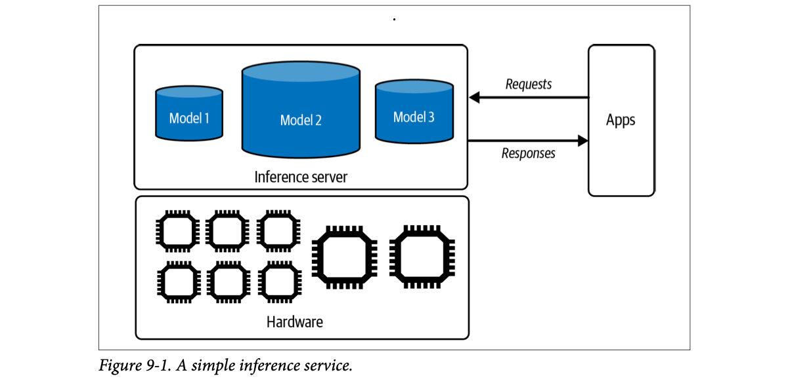
How to read this figure. On the right, Apps send Requests and get Responses. In the middle box, the inference server holds three models of different sizes (Model 2 is the biggest cylinder). Underneath, the hardware box holds chips: six small ones and two big ones. The server's job is matching each request to a model and each model to chips.
Model APIs from OpenAI or Google are inference services: if you use them, they do most of this chapter's work for you. If you host a model yourself, building, optimizing and maintaining the inference service is your job.
The gateway and preprocessing steps in the step-through are a typical example (modelled); the book only says the service receives, routes and may preprocess.
A railway reservation system. The counter clerk and queue system (service) take your form, check it, send it to the right train's booking engine; the booking engine (server) actually allots the seat using the railway's computers (hardware). Where it breaks: a seat is allotted once; an LLM "booking" keeps the hardware busy for the whole time it writes the answer.
Separating service from server lets you change routing, auth, rate limits and templates without touching the GPU process, and lets one server host several models. It is the same split as a web gateway in front of application servers.
"Sketch an LLM serving stack." Say: "Clients hit a gateway that handles auth, rate limits and routing; it forwards to an inference server like vLLM or TensorRT-LLM that holds model replicas on GPUs and does batching and KV-cache management. If we use a hosted API, the gateway is ours and the server is the provider's." In a realtime voice agent, that gateway is also where you pick a fast model for the first reply.
Full architecture with gateways and routers: Ch.10. Deploying an inference pipeline: LLM Engineer's Handbook Ch.10.
Optimizing means finding the bottleneck and attacking it, like a city planner who finds the worst traffic jams and fixes those junctions first. An inference server should be designed around the bottlenecks of its workload. There are two main kinds:
Different bottlenecks need different fixes. A compute-bound job speeds up if you spread it across more chips or use chips with more computing power (a higher FLOP/s, floating-point operations per second). A bandwidth-bound job speeds up with chips that have higher memory bandwidth.
A toy chip does 100 TFLOP/s and moves 2 TB/s. A job needs some amount of maths and some bytes moved. Time = the slower of the two.
A kirana shop at Diwali. If the shopkeeper is slow at billing, more cashiers help (compute-bound). If billing is instant but the stock boy has to fetch every item from the godown down the road, more cashiers do nothing; you need a faster delivery route (bandwidth-bound). Where it breaks: in a GPU the "godown trip" and "billing" can overlap, so time is roughly the slower one, not the sum.
Every operation needs its inputs in the compute units. If each byte fetched is used in only a few calculations, the cores finish early and sit idle waiting for the next bytes. If each byte is reused in many calculations, the memory keeps up and the cores become the limit.
"Is LLM inference compute-bound or memory-bound?" Say: "It depends on the phase. Prefill processes all prompt tokens at once, so it's compute-bound. Decode generates one token at a time and must read all weights per token, so it's memory-bandwidth-bound at small batch sizes. That's why batching and quantization help decode so much."
Some people say memory-bound for jobs limited by memory capacity, not bandwidth: the hardware simply doesn't have enough memory (say, a machine that cannot store the whole internet). Engineers everywhere know the symptom: OOM, out-of-memory.
Huyen argues that capacity limits are usually really bandwidth limits in disguise. You can often split a too-big task into pieces. If the model doesn't fit in GPU memory, put part of it in CPU memory. That works but slows things down because data must cross between CPU and GPU. If that transfer were fast enough, it wouldn't matter. So the capacity problem becomes a bandwidth problem.
Footnote 3. In the author's experience, people from a systems background (optimization engineers, GPU engineers) say memory-bound to mean bandwidth-bound, while people from an AI background (ML and AI engineers) use it to mean capacity-bound. Footnote 4. The Roofline paper uses memory-bound to mean bandwidth-bound.
| Phrase | Systems people mean | ML people often mean | Symptom |
|---|---|---|---|
| memory-bound | bandwidth-bound | capacity-bound | slow but runs / OOM crash |
| bandwidth-bound | always "data can't move fast enough" | cores idle, low MFU | |
Moving house with a small auto-rickshaw. "Capacity" problem: the sofa doesn't fit in one trip. But you can take it apart and make many trips; then your real limit is how fast trips are (bandwidth). Where it breaks: some things truly cannot be split well; a single huge layer that must sit in one GPU's memory at once is still a capacity wall.
Offloading (keeping weights in CPU RAM and streaming them to the GPU) turns a capacity shortage into bandwidth pressure on the CPU–GPU link, which is the slowest link in the memory hierarchy (plate 21).
"Your model OOMs on one GPU. Options?" Say: "Quantize to cut bytes; offload part to CPU memory and accept slower runs since we're now bandwidth-limited on the PCIe link; or split it across GPUs with tensor or pipeline parallelism. And I'd clarify whether 'memory-bound' in the ticket means capacity or bandwidth, because people use it both ways."
The ideas of compute-bound and bandwidth-bound come from the paper "Roofline" (Williams et al., 2009). Mathematically, you classify an operation by its arithmetic intensity: the number of arithmetic operations it does per byte of memory it accesses. Profiling tools like NVIDIA Nsight draw a roofline chart to tell you which side your workload is on. It's called that because the line looks like a roof.
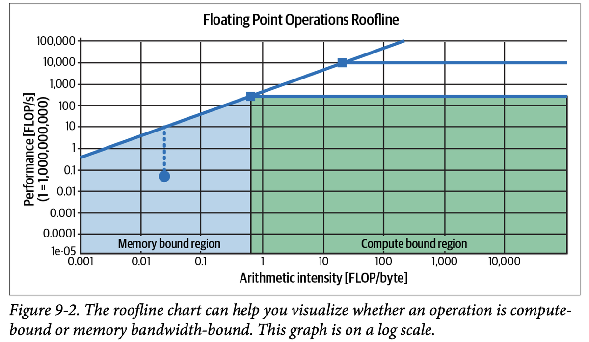
How to read this figure. X axis: arithmetic intensity (FLOP per byte), from 0.001 to 10,000. Y axis: achieved performance (FLOP/s). Both axes are logarithmic. The slanted line is the bandwidth limit: with few FLOPs per byte, the best you can do grows with intensity. The flat lines are compute ceilings (two are drawn, e.g. two chips or precisions); the square markers are the "ridge points" where slant meets flat. Left of the ridge (blue) = memory-bound region; right (green) = compute-bound region. The dot below the slanted line, with a dashed drop, is a real operation that achieves less than its roof: room to optimize.
Decoding one token for a 7B model at batch size 1 in FP16: about 2 FLOPs per parameter (a multiply and an add) = ~14 GFLOP, while reading 14 GB of weights. Intensity ≈ 1 FLOP/byte. On the toy chip above the ridge is at 50 FLOP/byte, so decode sits far left: bandwidth-bound, using ~2% of peak compute. Batch 32 requests and each weight byte is reused 32 times: intensity ≈ 32, much closer to the ridge.
A roof over a house: on the left side you walk up a slope (speed rises as you reuse each byte more), at the ridge you hit the flat ceiling (the chip can't calculate any faster). Where it breaks: real chips have several ceilings (per precision, tensor cores vs not), so there are several roofs stacked, as the figure's two flat lines show.
Achievable FLOP/s = min(peak FLOP/s, bandwidth × intensity). The ridge point = peak FLOP/s ÷ bandwidth. Modern GPUs have very high ridge points (hundreds of FLOP/byte), so many operations, especially small-batch decode, land on the slanted side.
"What is arithmetic intensity and why does batching help decode?" Say: "It's FLOPs per byte moved. Decode at batch 1 reads every weight for a single token, so intensity is about 1 and we're bandwidth-bound. Batching N requests reuses each weight read N times, raising intensity and throughput almost for free until we approach the compute roof."
Different architectures and workloads hit different bottlenecks. Image generators like Stable Diffusion are usually compute-bound at inference; autoregressive language models are usually bandwidth-bound. To see why, recall from Chapter 2 that transformer LLM inference has two steps:
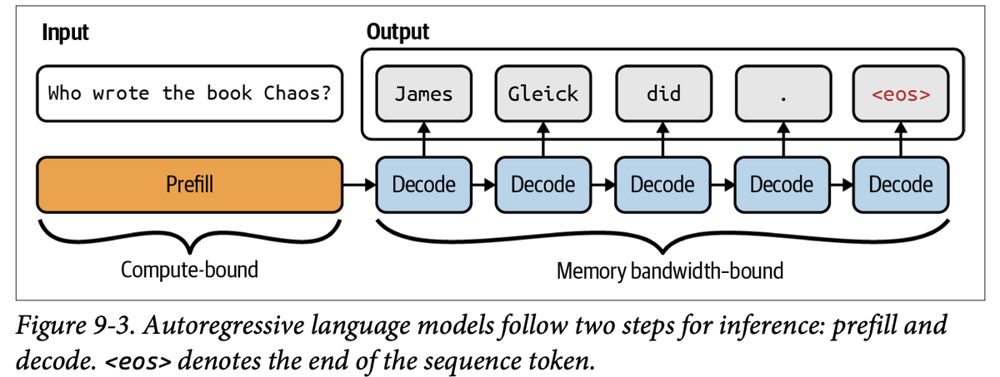
How to read this figure. The whole question "Who wrote the book Chaos?" enters one wide orange Prefill block (all tokens at once; brace says compute-bound). Then a chain of small blue Decode blocks, each emitting one token: "James", "Gleick", "did", ".", and <eos>, the end-of-sequence token that stops generation. Each decode depends on the one before (arrows left to right); the brace says memory bandwidth-bound.
Because prefill and decode behave so differently, production systems often run them on separate machines (plate 39).
What decides how much prefill and decode work a server does, and so its bottleneck? Context length, output length, and the request batching strategy. Long context usually makes the workload bandwidth-bound, but later techniques in the chapter can remove that.
As of the book's writing, because transformers dominate and today's accelerators have limits, many AI and data workloads are bandwidth-bound. Huyen expects future software and hardware to make them compute-bound.
A dosa counter. Prefill is the cook reading the whole order slip at once and preparing all the batter and fillings in one go: lots of work, done in parallel. Decode is serving dosas one at a time, where each dosa needs a walk to the big tawa at the back: the walking (memory trips), not the cooking, is what's slow. Where it breaks: the cook can't serve dosa #3 before #2, exactly like decode, but a real cook remembers the order without re-reading it; the model only "remembers" thanks to the KV cache.
In prefill, the input is a matrix of N tokens, so each weight read is reused N times (high arithmetic intensity). In decode, the input is a single token vector per request, so each weight read is used once (intensity ≈ 1). Same weights, same chip, very different position on the roofline.
"Why does a long prompt raise TTFT but a long answer raise total latency?" Say: "Prompt tokens are processed together in prefill, which is compute-bound and fast per token, so they mostly add to time-to-first-token. Output tokens come one by one in decode, each needing a full weight read, so they add TPOT per token. Anyscale found one output token costs latency like about 100 input tokens." For a voice agent this is why you keep replies short and stream them.
Sampling and autoregression: Ch.2. Inside the transformer forward pass: Hands-On LLMs Ch.3. TTFT/TPOT: plate 11.
Many providers offer two kinds of API:
Online APIs may still batch requests, as long as latency isn't hurt much (plate 38). The real difference: online focuses on lower latency, batch on higher throughput.
Customer-facing uses like chatbots and code generation need low latency → online. Good fits for batch APIs:
Footnote 6. If you run your own service, splitting traffic into online and batch lets you prioritise the latency-sensitive requests. Suppose your server can serve at most X requests/second without slowing down, but you receive Y > X. Ideally, the less urgent users send to the batch API, freeing capacity so online requests are served first.
Speed Post vs ordinary post at India Post. Speed Post (online) costs more and goes now. Ordinary post (batch) is cheaper because the post office fills a whole bag before the van leaves. Where it breaks: an online LLM API also quietly bags letters together when it can do so without delaying anyone.
With hours of slack, the provider can pack requests into huge batches (high arithmetic intensity, plate 6), fill idle GPUs at night, and use older or cheaper chips. That is real cost saved, which they pass on as the discount.
"You need to re-embed or re-summarise 10 million documents. How?" Say: "Not through the online API. Use the provider's batch API at about half price, or run our own job with large batches, since no user is waiting. Keep the online quota for user-facing traffic so it doesn't get throttled."
By default an API returns the whole response at once. With autoregressive decoding that can take a while, and users are impatient. So many online APIs offer streaming mode: each token is sent as soon as it is generated, cutting the wait for the first token.
The downside: you can't score (check) a response before the user sees it, so bad responses are more likely to reach users. You can still update or remove a response afterwards, as soon as the risk is detected.
Both columns finish at the same moment; streaming just shows something after 300 ms instead of ~2 s.
Sidebar: batch API ≠ batch inference in traditional ML. In traditional ML:
Precomputing works when inputs are finite and predictable, as in recommender systems: compute recommendations for every user in advance, and fetch them when the user visits the site. With foundation models, inputs are open-ended, so you can't precompute answers to every possible prompt. (Footnote 7: you usually do know the application's system prompt in advance; only the user queries are unpredictable. That is what prompt caching exploits, plate 40.)
Streaming is a cricket commentator calling every ball live; non-streaming is reading the scorecard after the match. Traditional "batch inference" is a newspaper that printed tomorrow's horoscopes for all 12 signs last night: possible only because there are just 12 inputs. Where it breaks: a live commentator can say something wrong on air and correct it next ball; a streamed LLM answer can be pulled back too, but the user may already have read it.
Streaming doesn't make generation faster; it changes perceived latency from "total time" to "TTFT". Output guardrails that need the full answer conflict with streaming, so teams either check chunks as they go or accept retroactive takedown.
"Should a voice agent stream?" Say: "Yes: stream LLM tokens into TTS as sentences complete, so audio starts after the first sentence instead of after the full reply. The trade-off is guardrails: I'd run fast checks per sentence and keep the ability to cut audio if a later check fails."
Before optimizing, decide what to optimize for. For users, the main axis is latency. (Response quality belongs to the model, not the inference service.) For application developers, throughput and utilization matter too, because they set the cost.
A Mumbai local train: passengers care how long their ride takes (latency); Railways cares how many people it moves per hour (throughput) and how full each rake runs (utilization). Where it breaks: overcrowding a train doesn't slow it; overcrowding a GPU batch does slow every request in it.
These three are linked: higher utilization usually raises throughput and lowers cost, but packing more work onto a chip tends to raise each request's latency. That tension runs through the whole chapter.
"Which metrics would you put on an LLM serving dashboard?" Say: "TTFT and TPOT at p50/p90/p99, output tokens per second and requests per minute, goodput against our SLO, cost per request, and MBU/MFU per GPU pool. Not nvidia-smi utilization alone, since it just says the GPU is busy, not efficient."
Latency is the time from the user sending a query until they have the complete response. For autoregressive generation, especially when streaming, it splits into:
Two apps with the same total latency can feel different. Would your users prefer an instant first token and slower tokens after, or a slightly longer wait followed by fast tokens? Only user studies can tell. You can move between the two by shifting compute instances from decode to prefill or back. (Footnote 10: an Anyscale experiment found 100 input tokens affect overall latency about as much as one output token.)
Set TPOT 100 and tokens 1,000 to reproduce the book's 100 s example (plus TTFT).
Users and the model can see different TTFT/TPOT. With chain-of-thought (CoT) or agentic queries, the model generates steps the user never sees. Some teams use the metric time to publish to mean the time until the first token the user sees. Huyen's scenario:
For the model, the first token came in step 1. For the user, it came in step 3, so their TTFT is much longer.
Ordering at a restaurant: TTFT is how long until the first plate lands; TPOT is the gap between later plates. An agent's hidden plan is like the kitchen calling the supplier before cooking: the kitchen is "working" from minute one, but your table sees nothing till much later. Where it breaks: diners can't read faster than plates arrive; with text, a TPOT faster than reading speed adds little value.
TTFT ≈ queueing + prefill time (grows with prompt length). TPOT ≈ one decode step (weights read + KV cache read per step), which grows with batch size and context length. Shifting GPUs between prefill and decode pools trades one for the other.
"Define TTFT and TPOT, and say which matters for a voice agent." Say: "TTFT is time from request to first token, dominated by prefill and queueing; TPOT is the average time per later token, dominated by decode. Total is TTFT plus TPOT times output length. For voice, TTFT (really time-to-first-audio) matters most, and TPOT only has to stay ahead of speech rate. For agents I track time-to-publish, since hidden reasoning and tool calls happen before anything is spoken."
Latency varies request to request, so the average misleads. Book example: 10 requests with TTFT 100, 102, 100, 100, 99, 104, 110, 90, 3,000, 95 ms. The average is 390 ms, making the service look much slower than it is. One request might have hit a network error, or had an unusually long prompt that took long to prefill. Either way, investigate it. With many requests, outliers that skew the mean are almost certain.
Percentiles are more useful: each describes a share of your requests. The most common is the 50th percentile (p50, the median): if p50 is 100 ms, half the requests got their first token faster than 100 ms and half slower. Percentiles also expose outliers, which can be symptoms of bugs. Usually watch p90, p95 and p99. It also helps to plot TTFT against input length.
Percentiles here use the nearest-rank method; tools differ slightly in how they interpolate (Beyond the book).
Ten friends' commute times to office: nine take ~30 minutes, one got stuck behind a broken-down bus for 5 hours. "Average commute 57 minutes" describes nobody. The median (30 min) describes the typical day; the max tells you to check that bus route. Where it breaks: in production that one slow request is a real user who may churn, so p99 matters even when p50 looks fine.
Means are pulled by the tail; percentiles aren't. LLM latency tails are fat because prompt lengths, output lengths and queueing vary a lot, and long requests in a batch can slow short ones (plate 38).
"Your average TTFT jumped. What do you do?" Say: "Check percentiles first: if p50 is flat but p99 spiked, it's a tail problem, maybe long prompts, a slow replica or network errors. Plot TTFT against input length to separate 'long prompt' from 'something broken', then look at queue depth and batch sizes."
Throughput = number of output tokens per second the service generates across all users and requests.
Throughput links straight to compute cost: higher throughput usually means lower cost. The book's worked example:
With the defaults you get the book's figures: about $5.556 per 1M output tokens, $1.11 to decode 1K requests, $0.33 to prefill them, $1.44 in total.
What counts as good throughput depends on model, hardware and workload. Smaller models and higher-end chips usually give more. Workloads with consistent input/output lengths are easier to optimize than variable ones. Even for similar setups, throughput comparisons are only approximate because "a token" depends on the tokenizer, and models differ. Better to compare inference servers by cost per request.
Like most software, AI apps face a latency/throughput trade-off. Batching raises throughput but worsens latency. LinkedIn's AI team, reflecting on a year of generative AI products (2024), said it's common to double or triple throughput if you're willing to give up some TTFT and TPOT.
An Ola/Uber driver paid per hour: the more rides per hour (throughput), the cheaper each ride can be. Pooling (batching) adds rides per hour but each passenger's trip gets a little longer. Where it breaks: ride "size" is standard; LLM requests vary hugely in token count, so per-request cost swings much more.
You pay per GPU-hour regardless of how much you use it. Cost per token = hourly price ÷ tokens per hour. Anything that raises tokens per GPU-hour (batching, quantization, better kernels) lowers cost per token directly.
"Estimate the cost per request of self-hosting." Walk the book's arithmetic out loud: "$2/hour at 100 tok/s is 360K tokens/hour, so about $5.56 per million output tokens; 200-token answers make 1K requests cost $1.11 to decode, plus prefill at 100 requests/minute is 10 minutes, $0.33. Total about $1.44 per thousand requests. Then compare with the API's price per request, not per token, because tokenizers differ."
Because of the latency/throughput trade-off, judging a service only by throughput and cost can give users a bad experience. So some teams use goodput, a metric borrowed from networking: the number of requests per second that satisfy the SLO. (The book expands SLO as "software-level objective"; Beyond the book: the usual industry expansion is service-level objective. Same idea: a target like "TTFT ≤ 200 ms".)
Book example: objectives are TTFT ≤ 200 ms and TPOT ≤ 100 ms. The service completes 100 requests per minute, but only 30 meet both targets, so goodput = 30 requests per minute.
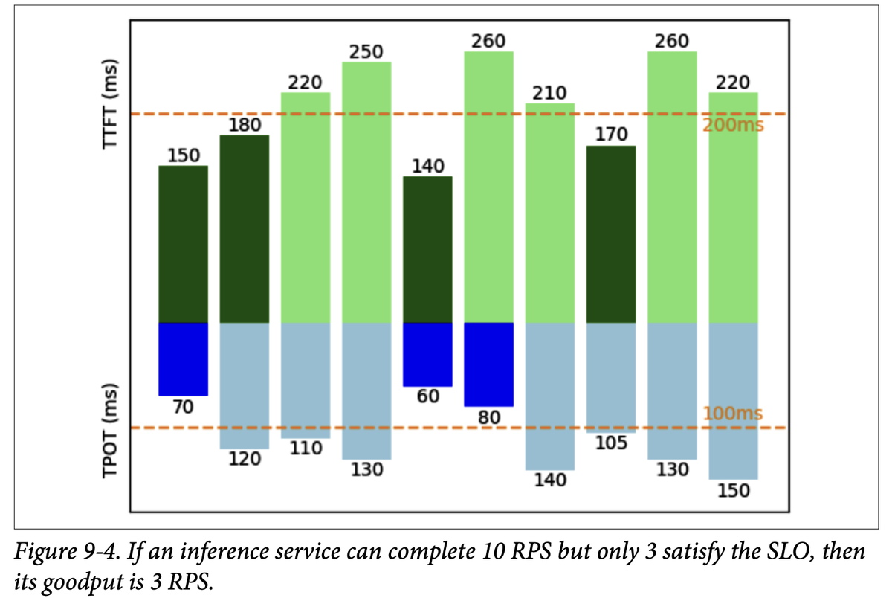
How to read this figure. Ten columns = ten requests. The upper bars are TTFT (dashed line at 200 ms); the lower bars are TPOT (dashed line at 100 ms). Dark green TTFT bars are under 200 ms (150, 180, 140, 170); dark blue TPOT bars are under 100 ms (70, 60, 80). A request counts toward goodput only if both parts are dark. Reading the printed values strictly, requests 1 (150/70) and 5 (140/60) pass both; the caption says 3. Either way the lesson holds: completing 10 requests per second is not the same as serving 10 good ones.
A Swiggy delivery partner who finishes 10 orders an hour but 7 arrive cold. The app's promise ("hot within 30 minutes") is the SLO; only 3 good deliveries an hour is the goodput. Where it breaks: a cold meal is clearly a failure; a slow LLM answer might still be useful, so pick SLO thresholds from user research, not gut feel.
Pushing batch size up raises raw throughput but slows each request, so more requests fall outside the SLO. Goodput peaks at some batch size and then falls; optimizing for goodput finds that sweet spot instead of the throughput maximum.
"Why goodput instead of throughput?" Say: "Throughput rewards cramming requests into huge batches even if every user waits too long. Goodput counts only requests that meet the SLO, e.g. TTFT under 200 ms and TPOT under 100 ms, so it measures capacity we can actually sell. I'd tune batch size and prefill/decode split to maximise goodput."
Utilization metrics measure how efficiently a resource is used: the share of its total capacity actually in use.
A common but often misunderstood metric is GPU utilization, and NVIDIA is partly to blame. Its official monitoring tool is nvidia-smi (SMI = System Management Interface). The "GPU utilization" it shows is the percentage of time the GPU is actively processing anything. Run inference on a cluster for 10 hours with GPUs busy for 5 → 50%.
But busy ≠ efficient. Take a tiny GPU that can do 100 operations per second. By nvidia-smi's definition, it can show 100% utilization while doing just 1 operation per second. If you pay for 100 and use 1, you're wasting money. So that metric isn't very useful.
What you care about is: of all the operations the machine could do, how many is it doing? That is MFU (Model FLOP/s Utilization), named to distinguish it from NVIDIA's metric. MFU = observed throughput (tokens/s) ÷ the theoretical maximum throughput at peak FLOP/s. If at the chip maker's advertised peak the chip could produce 100 tokens/s, but your service gets 20 tokens/s, MFU = 20%. (Footnote 11: people have cared about FLOP/s utilization for long, but the term MFU was introduced in the PaLM paper, Chowdhery et al., 2022.)
Good MFU depends on model, hardware and workload. Compute-bound work usually has higher MFU, lower MBU; bandwidth-bound work usually has lower MFU, higher MBU. Training has more predictable workloads and can be optimized better (e.g. better batching), so training MFU is usually higher than inference MFU. Within inference, prefill (compute-bound) has higher MFU than decode (bandwidth-bound). For training, as of writing, MFU above 50% is generally considered good, but hard to reach on some hardware.
Footnote 12, "peak FLOP/s hacking". Chip makers may measure their peak under special conditions, e.g. sparse matrices with specific shapes, to publish a bigger number. That makes the chip look attractive but makes high MFU harder for real users.
| Model | Parameters | Accelerator chips | MFU |
|---|---|---|---|
| GPT-3 | 175B | V100 | 21.3% |
| Gopher | 280B | 4096 TPU v3 | 32.5% |
| Megatron-Turing NLG | 530B | 2240 A100 | 30.2% |
| PaLM | 540B | 6144 TPU v4 | 46.2% |
Even the best large training run in the table used under half its chips' peak compute.
A 40-seat bus that "runs all day" (100% time-utilization) but carries one passenger per trip. The depot log says fully used; the seat-utilization (MFU) is 2.5%. Where it breaks: a bus's seats are all alike; a GPU's FLOP/s ceiling changes with precision and sparsity, so "peak" itself is a moving target (footnote 12).
nvidia-smi samples whether at least one kernel is running on the GPU. A tiny kernel using a handful of the thousands of cores still counts as "busy". MFU instead compares useful model FLOPs per second to the chip's theoretical maximum.
"GPU utilization is 95% but throughput is bad. Contradiction?" Say: "No. nvidia-smi utilization is the fraction of time any kernel runs, not how much of the chip it uses. I'd compute MFU and MBU. For decode at small batch, MFU is naturally low because we're bandwidth-bound, so I'd look at MBU and batch size before buying more GPUs."
Memory bandwidth is expensive too, so measure its use: MBU (Model Bandwidth Utilization) = the percentage of achievable memory bandwidth you actually use. Peak 1 TB/s, you use 500 GB/s → MBU 50%.
For LLM inference the bandwidth used is easy to compute, because every token needs every parameter read once:
Book example: a 7B model in FP16 (2 bytes per parameter) at 100 tokens/s on an A100-80GB with a theoretical 2 TB/s, which the book puts at MBU 70%.
Arithmetic slip in the book. The printed middle step says 7B × 2 × 100 = 700 GB/s. The product is actually 7×10⁹ × 2 × 100 = 1.4 TB/s. 1.4 TB/s ÷ 2 TB/s gives the book's 70%, so the final answer is right and only the 700 GB/s line is off. (700 GB/s would be 35%.)
This is why quantization (Chapter 7) matters so much: fewer bytes per parameter means less of the precious bandwidth per token.
Throughput (tokens/s) is linearly related to both MBU and MFU, so some people say "throughput" when they mean MBU or MFU.
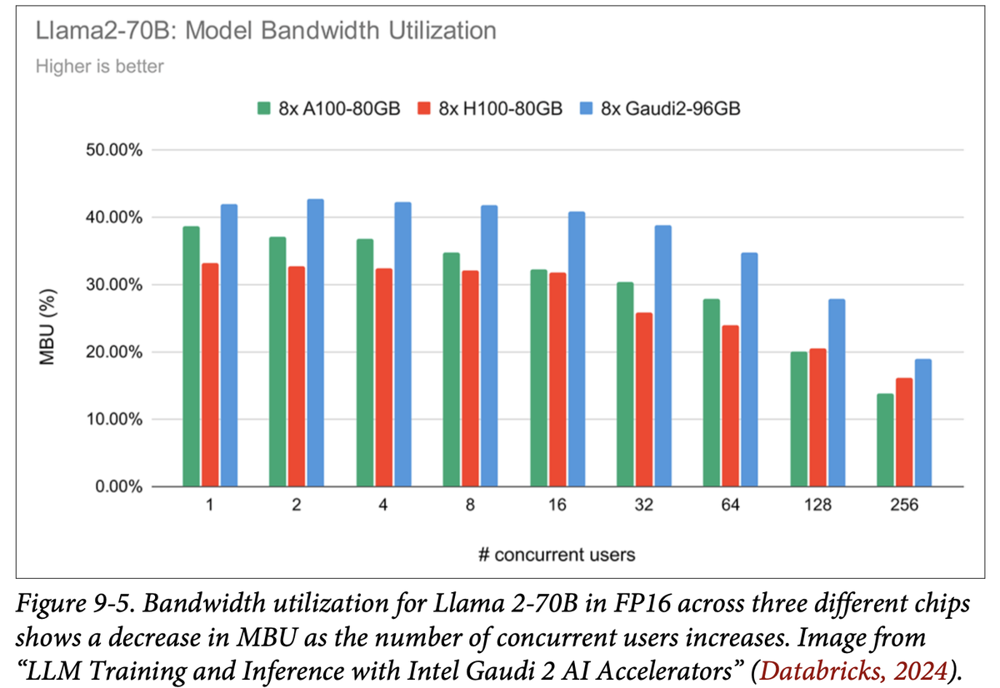
How to read this figure. X axis: number of concurrent users, doubling from 1 to 256. Y axis: MBU. Three bars per group: 8× A100-80GB (green), 8× H100-80GB (red), 8× Gaudi2-96GB (blue). At 1 user, MBU is roughly 33–43%; it stays flat-ish to 16 users, then falls to about 14–19% at 256 users. Huyen's reading: with more users the computation per second rises, so the workload shifts from bandwidth-bound toward compute-bound, and bandwidth stops being the thing that's maxed out.
Utilization metrics track efficiency: higher utilization on the same hardware for the same workload generally means you've become more efficient. But the goal is not the chip with the highest utilization. You want jobs done faster and cheaper. Higher utilization means nothing if cost and latency both go up.
A water tanker supplying a housing society: MBU is how much of the pipe's flow rate you use. One tap open (one user) and the pipe is the limit; 256 taps and the pump motor (compute) becomes the limit, so the pipe looks "less used". Where it breaks: water is consumed once; GPU weights are reread for every token, which is why the "pipe" matters so much more here.
At batch size 1, tokens/s × bytes of weights ≈ bandwidth used, so max tokens/s ≈ bandwidth ÷ model bytes. A 14 GB FP16 7B model on 2 TB/s tops out near 143 tok/s; INT4 (3.5 GB) lifts the ceiling to ~570 tok/s. (Ignores KV-cache reads; modelled.)
"Back-of-envelope: max decode speed of a 70B FP16 model on a GPU with 3.35 TB/s?" Say: "140 GB of weights per token, so about 3.35 ÷ 0.14 ≈ 24 tokens/s at batch 1, and realistically less since MBU is never 100%. That's why we quantize, shard across GPUs with tensor parallelism, and batch." (The 3.35 TB/s figure is a modelled number for practice.)
Quantization: Ch.7, Hands-On LLMs Ch.12. Memory bandwidth of chips: plate 21.
How fast and cheap software runs depends on its hardware. Some optimizations work everywhere, but understanding the hardware allows deeper optimization. This section takes an inference view, though it applies to training too.
AI models and hardware have always grown together:
Footnote 14. There has been talk of renaming the GPU, since it does far more than graphics. NVIDIA's CEO Jensen Huang said (Stratechery, March 2022) they considered names like GPGPU (general-purpose GPU) or XGU, but kept "GPU", assuming buyers would be smart enough to know what it's good for beyond the name.
Indian cricket before and after floodlights: day-night matches weren't a strategy problem but an equipment problem. Once the lights arrived, the game format exploded. GPUs were the floodlights for neural networks. Where it breaks: floodlights didn't change how a ball is bowled; GPUs did change model design (transformers were built to run fast on TPUs, plate 19).
Neural networks are mostly big matrix multiplications that can be split into thousands of independent pieces. Graphics already needed exactly that kind of parallel arithmetic, so GPUs turned out to be a near-perfect fit.
"Why did GPUs, not CPUs, enable deep learning?" Say: "Neural networks are dominated by matrix multiplies, which are embarrassingly parallel. A GPU has thousands of simple cores built for that; a CPU has a few strong cores for sequential work. AlexNet showed a couple of GPUs could replace thousands of CPUs, making large training affordable for researchers."
Scale and compute history: Ch.2, Hands-On LLMs Ch.1.
An accelerator is a chip designed to speed up one type of computation; an AI accelerator targets AI workloads. The dominant type is the GPU, and the biggest economic winner of the early-2020s AI boom is undoubtedly NVIDIA.
Footnote 15. Matrix multiplication ("matmul") is estimated to be over 90% of all floating-point operations in a neural network (Ivanov et al., "Data Movement Is All You Need", 2021; Zhu et al., "Scalable MatMul-free Language Modeling", 2024).
Chasing parallelism raises compute power but creates challenges for memory design and power consumption.
NVIDIA's success inspired many other AI accelerators: AMD's newer GPUs, Google's TPU (Tensor Processing Unit), Intel's Habana Gaudi, Graphcore's IPU (Intelligent Processing Unit), Groq's LPU (Language Processing Unit), Cerebras' Wafer-Scale Quant Processing Unit (QPU), and more.
A big trend: chips specialised for inference. Desislavov et al. (2023) report that inference can cost more than training in common systems, and accounts for up to 90% of ML costs for deployed AI systems.
Why inference chips differ: training needs much more memory (backpropagation) and is harder in low precision (Chapter 7). Training emphasises throughput; inference aims to minimise latency. So inference chips are often optimised for lower precision and faster memory access rather than huge memory capacity. Examples: Apple Neural Engine, AWS Inferentia, MTIA (Meta Training and Inference Accelerator). Edge chips like Google's Edge TPU and NVIDIA Jetson Xavier are also mostly for inference.
Some chips specialise in an architecture, such as chips for the transformer. Many chips target data centers, and more and more target consumer devices (phones, laptops).
| Chip family (from the book) | Maker | Typical role |
|---|---|---|
| GPU (A100, H100…) | NVIDIA, AMD | training + inference, general |
| TPU | tensor ops first; training + inference | |
| Habana Gaudi | Intel | training + inference |
| IPU / LPU / Wafer-scale | Graphcore / Groq / Cerebras | alternative AI accelerators |
| Inferentia, MTIA, Apple Neural Engine | AWS, Meta, Apple | inference-focused |
| Edge TPU, Jetson Xavier | Google, NVIDIA | edge inference |
A CPU is a senior chartered accountant: does any complex task, one at a time, brilliantly. A GPU is a hall of 5,000 clerks who can each only add and multiply, but together finish a lakh of simple sums in a second. Where it breaks: the clerks need their papers delivered fast; feeding them (memory bandwidth) becomes the real problem, as the next plates show.
Inference chips can drop features training needs (huge memory for gradients, high-precision maths) and spend the silicon on fast memory and low-precision units, which is what latency-focused serving wants.
"Why are companies building inference-only chips?" Say: "Inference is paid on every request and can be up to 90% of ML cost for deployed systems. It needs less memory than training and tolerates lower precision, so a chip specialised for low-precision maths and fast memory gives better latency per dollar."
Hardware architectures differ in memory layout and in specialised compute units, which change over time. These units are tuned for specific data types: scalars, vectors or tensors.
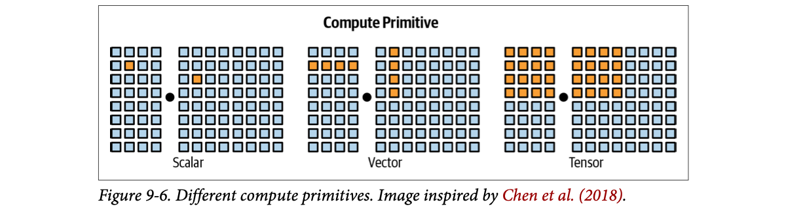
How to read this figure. Each panel shows two grids (matrices) multiplied (the dot). Orange cells are what one instruction touches. Scalar: one number times one number. Vector: a row of four times a column of four in one go. Tensor: a whole 4×4 block times a 4×4 block in one go. Bigger primitives mean more work per instruction.
A chip may mix unit types. GPUs traditionally supported vector operations, but many modern GPUs add tensor cores for matrix/tensor maths. TPUs make tensor operations their main primitive. To run a model efficiently, you must account for the hardware's memory layout and compute primitives.
Footnote 16. Chips can be designed for a model architecture, and architectures can be designed for chips: the transformer was originally designed by Google to run fast on TPUs, and only later optimised for GPUs.
Making rotis: scalar = rolling one roti at a time; vector = a roller that flattens a row of four; tensor = a roti press that stamps a whole tray. Where it breaks: the tray press is useless for one odd-shaped paratha, just as tensor cores need matrix-shaped work of suitable sizes.
Each instruction has a fixed overhead (fetch, decode, schedule). Doing more multiply-adds per instruction amortises that overhead, and tensor-shaped operations reuse each loaded value many times, which also helps arithmetic intensity.
"What are tensor cores?" Say: "Specialised GPU units that do a small matrix multiply-accumulate per instruction, usually in low precision like FP16, BF16 or FP8. They are why low-precision FLOP/s numbers are so much higher, and why matrix shapes and data types matter for speed."
A chip's spec sheet has many details, but across use cases the things that matter most are compute capability, memory size and bandwidth, and power consumption. Huyen uses GPUs as the example.
Compute is measured as operations per unit time; the usual metric is FLOP/s (often written FLOPS): the peak floating-point operations per second. Real apps almost never reach the peak; actual ÷ theoretical FLOP/s is a utilization metric (MFU, plate 15).
Operations per second depend on numerical precision: higher precision → fewer operations. Adding two 32-bit numbers needs roughly twice the computation of adding two 16-bit numbers. But 32-bit throughput is not exactly half of 16-bit, because chips optimise differently. (Precision formats: "Numerical Representations" in Chapter 7.)
| Numerical precision | teraFLOP/s | vs TF32 |
|---|---|---|
| TF32 Tensor Core (a 19-bit format, not 32-bit; see Ch.7) | 989 | 1× |
| BFLOAT16 Tensor Core | 1,979 | 2× |
| FP16 Tensor Core | 1,979 | 2× |
| FP8 Tensor Core | 3,958 | 4× |
"With sparsity" ties back to footnote 12: these peaks assume structured-sparse matrices, so dense workloads see less (Beyond the book: roughly half).
Counting money: counting ₹10 notes by the bundle (low precision) goes twice as fast as counting each coin to the paisa (high precision). Where it breaks: lose too much precision and the totals go wrong; models tolerate it to a point (Ch.7), not without limit.
Smaller numbers need fewer transistors per multiplier, so the same silicon holds more multipliers and each operand needs fewer bytes moved. That's why FP8 doubles FP16's peak on the same chip.
"Why do spec sheets list several FLOP/s numbers?" Say: "Peak FLOP/s depends on precision and on sparsity. An H100 SXM is about 989 TFLOP/s in TF32 but 3,958 in FP8, with sparsity. So compare chips at the precision you'll actually run, and remember sparse peaks overstate dense performance."
A GPU has thousands of cores working at the same time. They are useless unless data reaches them fast enough, so data transfer speed matters as much as raw maths. This is extra true for AI: the weight matrices and training data are huge and must keep streaming into the cores. So GPU memory must have higher bandwidth and lower latency than CPU memory, which needs more advanced (and more expensive) memory technology. That is one reason GPU memory costs more than CPU memory.
Concretely: CPUs usually use DDR SDRAM (Double Data Rate Synchronous Dynamic Random-Access Memory), laid out in a flat 2D structure. High-end GPUs usually use HBM (high-bandwidth memory), built as a 3D stack of memory dies. (Footnote 17: lower-end and mid-range GPUs may use GDDR, Graphics Double Data Rate memory, instead of HBM.)
An accelerator's memory is described by size and bandwidth, and you have to judge both inside the whole system the chip sits in. A GPU typically talks to three levels of memory:
| Level | What it is | Bandwidth (book) | Size (book) |
|---|---|---|---|
| 1 · CPU memory (DRAM) | The host's memory, also called system memory, host memory or CPU DRAM. Accelerators sit next to CPUs and can reach it. | 25–50 GB/s (slowest) | Laptops ~16–64 GB; high-end workstations 1 TB or more |
| 2 · GPU HBM | Memory dedicated to the GPU, placed close to it so access is faster than CPU memory. | ~256 GB/s to over 1.5 TB/s | A consumer GPU has ~24–80 GB |
| 3 · GPU on-chip SRAM | Built into the chip itself: L1 and L2 caches (L3 in some designs), part of the on-chip memory that also includes register files and shared memory. Holds the most-used data and instructions for near-instant access. | often over 10 TB/s | Tiny: usually 40 MB or less |
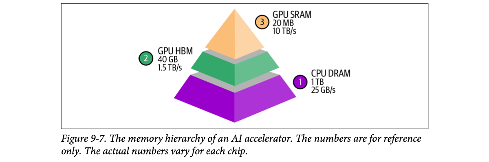
How to read this figure. Width of each layer = how much it holds; height in the pyramid = how fast it is. The wide purple base (1, CPU DRAM: 1 TB at 25 GB/s) is big and slow. The green middle (2, GPU HBM: 40 GB at 1.5 TB/s) is about 60× faster but 25× smaller. The orange tip (3, GPU SRAM: 20 MB at 10 TB/s) is fastest but holds only megabytes. Every step up buys speed by giving up space. The numbers are examples, not a particular chip.
Much of GPU optimization is about using this hierarchy well: keep hot data high in the pyramid and avoid trips down. But as of the book's writing, popular frameworks like PyTorch and TensorFlow do not give fine-grained control over memory access. That pushed many AI researchers and engineers towards GPU programming languages: CUDA (originally Compute Unified Device Architecture, NVIDIA's, proprietary), OpenAI's Triton, and ROCm (Radeon Open Compute), AMD's open-source alternative to CUDA. More on these in plate 36.
A 7B-parameter model in FP16 is 7 × 2 = 14 GB. At 1.5 TB/s HBM bandwidth, reading it once takes 14 ÷ 1,500 ≈ 9.3 ms. Since decode reads all weights per token, one request can't go faster than ≈ 107 tokens/s on that chip, no matter how many FLOP/s it has. (Modelled; it ignores the KV cache and overheads.) This is the MBU idea from plate 16 made concrete.
A kitchen. SRAM is the masala dabba right next to the stove: tiny, instant. HBM is the kitchen fridge: holds the week's groceries, a few steps away. CPU DRAM is the kirana shop down the road: has everything, but each trip is slow. A good cook plans so that the stove never waits for a trip to the shop. Where it breaks: a cook can choose what goes in the dabba by hand; in PyTorch you mostly can't, which is why people write kernels.
Bandwidth is set by how many wires connect memory to compute and how fast they toggle. HBM stacks dies vertically and places them on the same package as the GPU, so it can use a very wide bus over a very short distance. SRAM sits inside the compute die itself, so it is fastest, but each bit takes several transistors and precious die area, so there can't be much of it.
"Why does a bigger GPU memory matter for LLM serving?" Say: "Two numbers matter: HBM size decides whether the weights plus KV cache fit, and HBM bandwidth decides how fast each decode step can be, since decode streams the weights every token. SRAM is tiny and fast, so kernels like FlashAttention tile work to stay in SRAM. CPU DRAM is the slow fallback for offloading."
Chips compute by switching transistors on and off, and every switch uses energy. A GPU has billions of them: an NVIDIA A100 has 54 billion, an H100 has 80 billion. When the chip is used well, billions of transistors flip rapidly, drawing a lot of power and producing real heat. That heat needs cooling systems, which also use electricity, adding to a data centre's total energy bill.
This has a large environmental impact and pushes companies towards green data centres. An H100 running at peak for a year uses about 7,000 kWh; an average US household uses about 10,000 kWh a year. That's why electricity is a bottleneck to scaling up compute.
Footnote 18. A main challenge in building data centres with tens of thousands of GPUs is finding a site that can guarantee enough electricity. You have to juggle electricity supply, build speed and geopolitics. Remote regions may have cheaper power but add network latency, which makes them less attractive for latency-sensitive work like inference.
Spec sheets give power as one of two numbers:
If you use a cloud provider, cooling and electricity are their problem. The numbers still matter for understanding environmental impact and overall electricity demand.
An air-conditioner in a Chennai summer: the AC itself draws power, and the hotter the room gets (more people, more appliances), the harder it must work. A GPU rack is a room full of 700-watt heaters that must be kept cool. Where it breaks: your home AC is a comfort; data-centre cooling is a hard limit: without it, chips throttle or fail.
Each transistor switch charges and discharges a tiny capacitance, and the energy goes out as heat. More switches per second (higher utilization, higher clock) means more heat. That is why high MFU and high power draw go together, and why power, not just chip supply, limits how big a cluster can get.
"What's TDP and why should a software engineer care?" Say: "TDP is the heat the cooling must handle under typical load; peak draw is about 1.1–1.5× higher. On-prem it drives your power and cooling cost; in the cloud it's baked into price. At scale, electricity, not chips, often caps cluster size, so efficiency work directly saves money and carbon."
Which accelerator to choose depends on the workload. Compute-bound? Look for more FLOP/s. Memory-bound? Paying for more memory and higher bandwidth will make life easier.
When evaluating chips, ask three questions:
FLOP/s, memory size and memory bandwidth are the three big numbers that answer the first two. The third is simple: cloud pricing is usually usage-based and fairly similar across providers; if you buy hardware, cost = initial price + ongoing power.
The workload labels and verdicts in this chooser are illustrations built from the chapter's rules (plates 6–7), not examples from the book.
Buying a vehicle for a dabbawala route vs a highway trip: the dabbawala needs carrying capacity and quick loading (memory), the highway trip needs engine power (FLOP/s). A Ferrari is wasted carrying tiffins. Where it breaks: most real AI services mix both kinds of work, so you balance, not choose one.
The roofline (plate 6) says a workload's arithmetic intensity places it on the slanted (bandwidth) or flat (compute) part of the roof. Buying more of the resource you aren't limited by moves nothing; buying the one you are limited by lifts throughput directly.
"How would you choose GPUs for serving a chat model?" Say: "Start from the bottleneck: chat decode is bandwidth- and memory-bound, so I'd compare HBM size and bandwidth first, then FLOP/s at my serving precision. Then the three questions: can it run (fits weights + KV cache), how fast (TTFT/TPOT on a benchmark of my traffic), and cost per million tokens including power or cloud price."
Inference can be optimized at three levels. Huyen uses archery:
| Level | Archery analogy | Covered here? |
|---|---|---|
| Model level | Craft better arrows | Yes (plates 25–37) |
| Hardware level | Train a stronger, better archer | No: hardware design is out of the book's scope |
| Service level | Refine the whole shooting process, including the bow and aiming conditions | Yes (plates 38–43) |
Ideally, making a model faster and cheaper should not change its quality. In practice many techniques can degrade the model. The chapter discusses levels separately, but in production you usually combine techniques from more than one level.
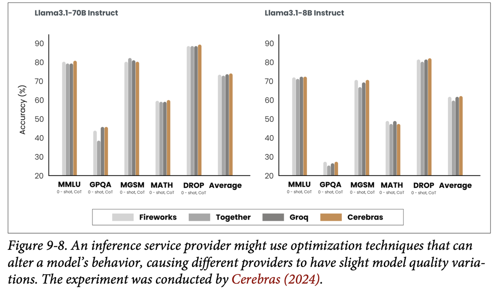
How to read this figure. Same two open models (Llama 3.1 70B Instruct on the left, 8B Instruct on the right), same benchmarks (MMLU, GPQA, MGSM, MATH, DROP, all 0-shot with chain-of-thought, plus the average), four hosts (Fireworks, Together, Groq, Cerebras: light grey to orange). If serving didn't change the model, each group of four bars would be identical. They aren't: on GPQA for 70B one provider sits near 38% while others reach about 45%; on 8B MGSM one provider is a few points lower. Averages are close but not equal. Note that Cerebras ran the experiment, and its own bars are among the highest, so read it as "providers differ", not as a neutral ranking.
The same biryani recipe at four branches of a chain. Each branch "optimizes" (a cheaper rice, a shorter dum time) to serve faster. The menu name is the same, the taste is slightly different. Where it breaks: you can taste biryani; with a model API you only notice via evals.
Providers may quantize weights or the KV cache, use different kernels, change sampling defaults, or truncate context to hit speed and price targets. Each can shift outputs a little. Service-level tricks (batching, caching, parallelism) should not change outputs; model-level ones often can.
"Is Llama 3.1 70B on provider A the same as on provider B?" Say: "Not necessarily. Providers apply optimizations like quantization that can shift quality; Cerebras's comparison showed a few-point gaps on benchmarks like GPQA. So I run my own eval set against each provider before switching, the same way I'd test a new model version."
Model-level optimization makes the model itself more efficient, often by changing the model, which can change how it behaves. As of the book's writing, most foundation models are transformers with an autoregressive language model part. Three characteristics make their inference resource-hungry, and the next plates take them one at a time:
| Characteristic | Why it costs | Fixes in this chapter |
|---|---|---|
| 1. Model size | More parameters = more bytes to store and stream per token | Model compression: quantization, distillation, pruning (plate 26) |
| 2. Autoregressive decoding | One token at a time; each needs a full pass over the weights | Speculative decoding, inference with reference, parallel decoding (plates 27–30) |
| 3. The attention mechanism | Every new token looks back at all earlier tokens; keys/values pile up | KV cache, attention redesign, KV-cache management, kernels (plates 31–37) |
A Mumbai local train is slow for three separate reasons: it is heavy (size), it must stop at every station in order (autoregressive), and at each stop the guard checks the whole platform behind him (attention). Each problem needs its own fix. Where it breaks: a train's stops are fixed; a model's "stops" (tokens) depend on what it just said.
Size sets bytes per step; autoregression sets the number of sequential steps; attention adds a per-step cost that grows with how long the sequence already is. Total decode time ≈ steps × (weight bytes + KV bytes) ÷ bandwidth, so each fix attacks one factor.
"Where does LLM inference cost come from?" Say: "Three places: parameter count, because every token streams all weights; autoregressive decoding, because tokens are produced one after another; and attention, because each token reads the keys and values of all earlier tokens. Quantization and distillation hit the first, speculative decoding the second, KV-cache and attention kernels the third."
Transformer architecture: Ch.2, Hands-On LLMs Ch.3.
Model compression means techniques that shrink a model; a smaller model is often also faster. Two were covered earlier in the book:
Distillation hints that a big model's behaviour can be captured with fewer parameters. So maybe inside the big model there is already a subset of parameters that does the whole job? That question is the idea behind pruning. In neural networks "pruning" has two meanings:
A pruned model can be used as-is or finetuned afterwards to adjust the remaining weights and recover lost performance. Pruning can also help discover good architectures (Liu et al., 2018); those smaller pruned architectures can even be trained from scratch (Zhu et al., 2017).
Results in the literature are encouraging: Frankle and Carbin (2019) showed pruning can cut the non-zero parameter count of some trained networks by over 90%, shrinking memory and speeding things up without losing accuracy. But in practice, as of writing, pruning is less common, because:
Weight-only quantization is by far the most popular approach: easy to use, works out of the box for many models, extremely effective. Going from 32 to 16 bits halves memory. But we are close to the limit: you can't go below 1 bit per value. Distillation is also common, because the small model can behave comparably to a much bigger one for your needs.
Llama-class 70B: FP32 = 280 GB, FP16 = 140 GB, INT8 = 70 GB, INT4 = 35 GB. Going FP16 → INT4 takes it from "needs two 80 GB GPUs" to "fits one with room for a KV cache". And since decode streams these bytes every token, INT4 also means roughly 4× fewer bytes read per token than FP16 (modelled; real gains are lower because of dequantization overhead and the KV cache).
Quantization is writing prices as ₹47 instead of ₹46.85: less precise, much shorter. Distillation is a senior chef training a junior who can cook the ten dishes your restaurant actually sells. Pruning is removing staff who never do anything: easy to say, hard to find out who they are without breaking the kitchen. Where it breaks: rounding prices is harmless; rounding too many weights eventually hurts answers.
Decode is bandwidth-bound (plate 7), so time per token tracks bytes per token. Halving bits per weight halves bytes. Pruning only helps if the zeros are skipped; GPUs are built for dense blocks, so random zeros usually aren't skipped. Structured sparsity (like the 2:4 pattern behind "with sparsity" FLOP/s in Table 9-2) is the hardware-friendly version (Beyond the book).
"Quantization vs distillation vs pruning: what would you try first?" Say: "Weight-only quantization first: no training, works on most models, halves memory per halving of bits, and directly speeds up bandwidth-bound decode. Distillation if I need a much smaller model for a narrow task and can afford training. Pruning last: harder, smaller gains, and the hardware may not exploit sparsity."
Numerical formats and quantization in depth: Ch.7. Distillation and synthetic data: Ch.8. Practical quantization (GGUF, GPTQ, AWQ): LLM Engineer's Handbook Ch.8, Hands-On LLMs Ch.12.
Autoregressive language models generate one token after another (Chapter 2). If one token takes 100 ms, a 100-token answer takes 10 s. It's not only slow but costly: across API providers an output token costs about 2–4× an input token. Anyscale measured that one output token can affect latency as much as 100 input tokens (Kadous et al., 2023). So even a small percentage gain in generation speed noticeably improves user experience.
Footnote 19. Each generation step must move the entire model's parameters from HBM to the compute units, which is bandwidth-heavy. And because only one token is produced, it uses very few FLOP/s, so compute sits mostly idle.
The field moves fast and new techniques keep appearing to beat this "seemingly impossible" bottleneck; maybe future architectures won't have it at all. The three techniques that follow illustrate what solutions look like, but they are still evolving:
Writing a long answer in an exam with one pen and the rule that you must re-read the whole textbook before every word. The writing is easy; the re-reading is what takes time. Where it breaks: a student can remember; the model "remembers" past tokens via the KV cache, but must still re-read its weights each step.
Token t+1 depends on token t, so steps can't simply run in parallel. Each step is a full forward pass that reads all weights for very little maths. Every technique in the next three plates gets more than one token per weight read, turning idle FLOPs into useful work.
"Why are output tokens priced higher than input tokens?" Say: "Input tokens are processed in parallel during prefill, using compute efficiently. Output tokens are made one per forward pass in decode, each reading all the weights, so they occupy the GPU much longer per token. That's why providers charge 2–4× more and why one output token costs about as much latency as 100 input tokens."
Speculative decoding (also called speculative sampling) uses a faster, weaker model to generate a few tokens, which the model you actually want, the target model, then verifies. The fast model is the draft (or proposal) model. With input tokens x1…xt:
Then repeat from step 1 with the draft model continuing from x1…xt+j. If no draft token is accepted, the loop still yields 1 token (the target's own). If all are accepted, it yields K + 1 tokens (K from the draft, 1 from the target).
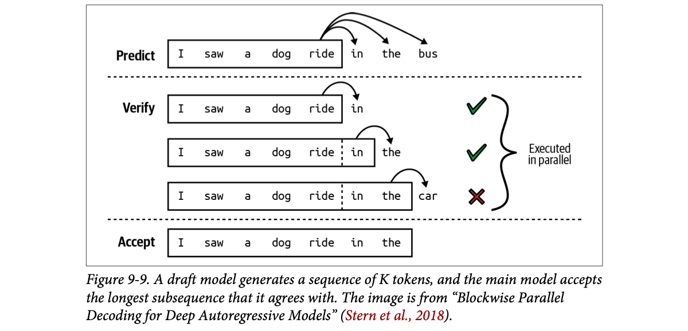
How to read this figure. Predict: after "I saw a dog ride", the draft guesses K = 3 tokens: "in the bus". Verify: the target checks three prefixes at once (the brace says "executed in parallel"): after "ride" it would also say "in" ✓; after "ride in" it would say "the" ✓; after "ride in the" it would say "car", not "bus" ✗. Accept: the longest agreed run, "in the", is kept. In the full algorithm the target's own prediction at the first mismatch ("car") becomes the bonus token, so this loop yields 3 tokens for one target pass.
Doesn't a bad draft make things slower (the target must verify and then generate anyway)? It can, but three insights keep that rare:
Acceptance rate depends on the domain: structured text like code usually gets higher rates. Larger K means fewer target calls but a lower acceptance rate. The draft model can be any architecture, but ideally shares the target's vocabulary and tokenizer. You can train a custom draft or use an existing weaker model.
The formula (expected tokens = (1 − aK+1) ÷ (1 − a), assuming each draft token is accepted independently with probability a) comes from the speculative-sampling papers, not from this chapter (Beyond the book). Default draft cost 13% ≈ DeepMind's 1.8 ÷ 14.1 ms below. Try raising K with a low acceptance rate: the speed-up falls, which is the book's "larger K, lower acceptance" trade-off.
Real results. To speed up Chinchilla-70B, DeepMind trained a 4B-parameter draft of the same architecture (Chen et al., 2023). The draft makes a token about 8× faster (1.8 ms vs 14.1 ms per token), and overall response latency dropped by more than half with no loss in quality. A similar speed-up was shown for T5-XXL (Leviathan et al., 2022; the book spells it "Laviathan").
It has caught on because it's relatively easy (about 50 lines of PyTorch) and doesn't change quality. It's built into vLLM, TensorRT-LLM and llama.cpp.
def speculative_step(ctx, draft_lm, target_lm, k=4):
guesses = draft_lm.greedy(ctx, n=k) # k cheap sequential steps
preds = target_lm.argmax_each(ctx + guesses) # ONE parallel pass: target's choice at every position
accepted = []
for g, p in zip(guesses, preds): # walk left to right
if g != p:
break
accepted.append(g)
bonus = preds[len(accepted)] # target's own token at first mismatch (or after all k)
return ctx + accepted + [bonus]draft_lm.greedy and target_lm.argmax_each are made-up helper names. The key line is the single target call that scores all guesses at once; that's where the time is saved. Sampling-based versions use an accept/reject rule so the output distribution stays exactly the target's (Beyond the book).
A CA firm: the article assistant drafts the next four lines of a tax return, the partner reads all four at once and signs off on the first three, rewriting the fourth. The partner's time per line drops because reading is faster than writing. Where it breaks: if the assistant is bad at this client's work (low acceptance), the partner wastes time reading drafts he then rewrites.
A forward pass over 1 token and over K+1 tokens cost almost the same wall-clock time in decode, because both are dominated by reading the weights. So checking K guesses costs ≈ one normal step. Every accepted guess is a token you got without a separate weight read.
"Explain speculative decoding and when it helps." Say: "A small draft model proposes K tokens; the big model verifies them in one parallel pass, keeps the longest agreed prefix and adds one token of its own. Output quality is the target's, but you get several tokens per big-model pass. It helps when decode is bandwidth-bound with idle FLOPs and the text is predictable, like code; it helps little if MFU is already maxed or acceptance is low." For a voice agent, it cuts TPOT without changing answers.
Prefill-like verification: plate 7. MFU: plate 15. Used in the PyTorch case study: plate 37. Hands-on view: LLM Engineer's Handbook Ch.8.
Answers often repeat parts of the input. Ask about an attached document and the model may quote a chunk of it word for word. Ask it to fix a bug and it will reuse most of the original code with small changes. Why make the model generate those repeated tokens one by one? Copy them from the input instead. That's inference with reference.
It works like speculative decoding, except the draft tokens are selected from the input rather than produced by a draft model. The key challenge is an algorithm to find the most relevant text span in the context at each decoding step. The simplest option: find a span that matches the current tokens and propose what came after it.
In "Inference with Reference: Lossless Acceleration of Large Language Models" (Yang et al., 2023) it gave about a 2× generation speed-up in such use cases.
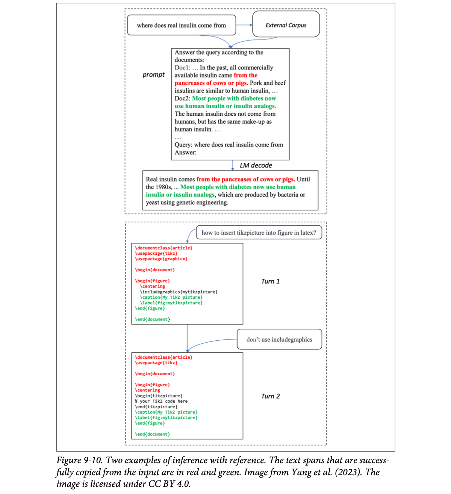
How to read this figure. Top (retrieval): the question "where does real insulin come from" pulls two documents from an external corpus into the prompt. The model's answer contains a red span copied from Doc1 (about insulin coming from the pancreases of cows or pigs) and a green span copied from Doc2 (about most people with diabetes now using human insulin or analogs); only the black words are truly generated. Bottom (multi-turn coding): turn 1 answers a LaTeX question with a code block; the user says "don't use includegraphics"; turn 2's code reuses almost every line of turn 1 (red/green) and only swaps the middle lines. Everything coloured could be copied in bulk instead of decoded token by token.
Toy model: "tokens" are whitespace-separated words, any run of 2+ words found in the source is treated as one copied draft that the model verifies in one pass. Real systems verify copied spans with the target model exactly like speculative drafts.
Filling a railway reservation form from your Aadhaar card: you don't compose your name and address afresh, you copy them across and only think about the train number and date. Where it breaks: it only helps when the answer really is in the source; an original essay gets no speed-up.
A copied span is just a free draft: zero cost to propose, and if it matches what the model would have written, one parallel verification pass accepts many tokens. If the span diverges, verification rejects the rest and the model continues normally, so output stays exactly what the model would produce (hence "lossless").
"Your RAG answers quote documents a lot and are slow. Any decoding trick?" Say: "Inference with reference, also called prompt-lookup decoding: use matching spans from the retrieved context as speculative drafts and verify them in one pass. No draft model needed, output unchanged, and Yang et al. report about 2× in retrieval, coding and multi-turn settings." It fits RAG-memory agents that echo stored facts.
Speculative decoding: plate 28. RAG: Ch.6, Hands-On LLMs Ch.8. Prompt caching (another win from overlap): plate 40.
Instead of speeding up autoregression with draft tokens, some techniques try to break the sequential dependency. Given x1…xt, they generate xt+1, xt+2, …, xt+k simultaneously: the model produces xt+2 before it knows xt+1.
Why can that work? The existing text often already tells you the next few tokens. After "the cat sits", you don't know whether the next word is "on", "under" or "behind", but you can still guess the word after it is "the".
The parallel tokens can come from:
Because these tokens aren't made in order, they must be checked to make sure they fit together: verification and integration are the essential part. Two approaches:
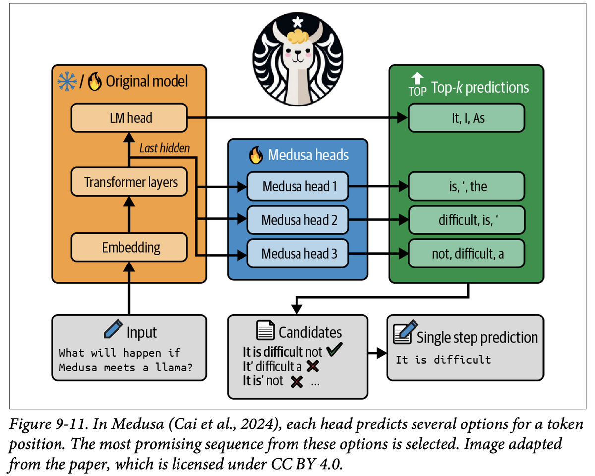
How to read this figure. Bottom left: the input question. Orange box: the original model (snowflake/flame = it can be frozen or trained); its LM head gives top-k options for the next token ("It, I, As"). The last hidden state is also fed to three blue Medusa heads (flame = trained), each guessing a further position: head 1 "is, ', the", head 2 "difficult, is, '", head 3 "not, difficult, a". The green box collects these top-k lists. Combinations become candidates: "It is difficult not" ✓, "It' difficult a" ✗, "It is' not" ✗ … The verified prefix "It is difficult" is accepted in a single step: three tokens from one forward pass.
Huyen's verdict: skipping the sequential dependency is appealing, but parallel decoding is not intuitive, and some methods, like Medusa, can be hard to implement.
A cricket commentator's team pre-writing three possible lines for the next ball ("four!", "dot ball", "wicket!") so the right one is ready the instant it happens. Medusa heads are those pre-writers, each covering a different future moment. Where it breaks: the commentator picks one line after the fact; Medusa must check that its picks also fit each other.
The last hidden state already encodes a lot about the next few tokens, not only the very next one. Medusa's cheap heads read that state to guess further ahead; the tree attention lets the main model verify many candidate continuations in one batched pass, exactly the "spare FLOPs" idea from speculative decoding, but without a separate draft model.
"Speculative decoding vs Medusa?" Say: "Speculative decoding needs a separate draft model with the same tokenizer; Medusa bolts small extra heads onto the frozen target to predict positions t+2, t+3… and verifies candidate combinations with tree attention. Medusa avoids running a second model but needs head training and is harder to implement; NVIDIA reported up to 1.9× on Llama 3.1."
Speculative decoding: plate 28. Inference with reference: plate 29. Language-model heads: Hands-On LLMs Ch.3.
From Chapter 2: to generate the next token, attention needs the key (K) and value (V) vectors of all previous tokens:
So when generating xt+1, there's no need to recompute K and V for x1…xt−1: reuse them from the previous step and compute K and V only for the newest token, xt. The store that holds them for reuse is the KV cache; each step's new K and V are appended to it.
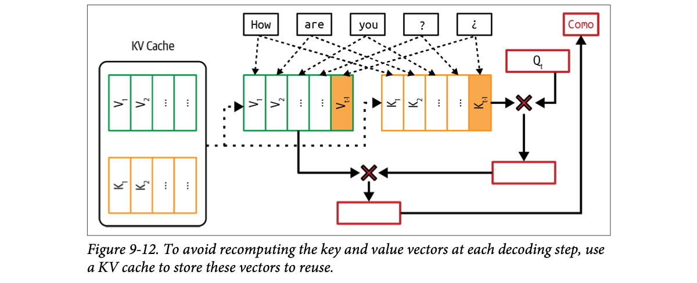
How to read this figure. This is a translation example: after "How are you ? ¿" the model is about to write the Spanish "Como". Left: the KV cache already holds V1, V2, … (green) and K1, K2, … (orange). Dotted arrows show those old vectors being reused. Only the last column, Vt−1 and Kt−1 (filled orange), is newly computed from the latest token. Then the current query Qt is multiplied (red ×) with all keys to get attention scores, those scores are multiplied with all values, and the result produces the output token "Como" (red box, top right).
Note. A KV cache is used only during inference, not training. In training every token of the sequence is known in advance, so all next-token predictions are computed at once rather than one by one; there's nothing to cache.
The costs grow with length:
A Google paper (Pope et al., 2022) calculated that for a 500B+ model with multi-head attention, batch size 512 and context length 2,048, the KV cache totals 3 TB, three times the model's own weights.
KV cache size is ultimately capped by available hardware memory, which bottlenecks long-context applications. A large cache also takes time to load into memory, a problem for strict-latency apps. Attention's compute and memory needs are one of the main reasons long context is hard.
Techniques to make attention efficient fall into three buckets: redesigning the attention mechanism (plate 33), optimizing the KV cache (plate 34), and writing kernels for attention (plate 35).
Teal = K/V reused from the cache; amber = K/V computed this step. Toggle "no cache" to see every earlier token recomputed (all amber) each step: total work grows like 1+2+3+…, which is quadratic.
A kirana owner's khata (credit book). When a customer buys something new, he doesn't re-total every purchase since January; he reads the running entries and adds one line. The khata is the KV cache. Where it breaks: the khata is a few pages; a KV cache for long chats and big batches can be bigger than the model itself.
In a causal transformer a token's K and V depend only on tokens up to itself, so once computed they never change. Caching them turns each decode step's work from "process the whole sequence" into "process one token, read the cache". The price is memory: per token, every layer stores a K and a V vector.
"What is the KV cache and what does it cost?" Say: "During decoding, keys and values of past tokens never change, so we cache them and compute K and V only for the newest token. That saves compute but costs memory that grows linearly with sequence length and batch size; Google's example of a 500B model at batch 512 and 2K context needed 3 TB, three times its weights. So KV memory, not weights, often limits batch size and context length."
Attention basics: Ch.2, Hands-On LLMs Ch.3. Prefill fills the cache: plate 7. Size formula: plate 32. KV cache in practice: LLM Engineer's Handbook Ch.8.
Without any optimization, the KV cache needs:
This gets large as context grows. The book's example: Llama 2 13B has 40 layers and model dimension 5,120. With batch 32, sequence length 2,048 and 2 bytes per value: 2 × 32 × 2,048 × 40 × 5,120 × 2 ≈ 54 GB, which is about twice the model's own FP16 weights (~26 GB).
"KV sharing ÷" is not in the book's formula: set it to the factor by which an attention redesign cuts K/V pairs (e.g. 3 for three layers sharing K/V in cross-layer attention, or query heads ÷ KV heads for GQA/MQA, plate 33) to see the effect.
Same Llama 2 13B, but one user with a 32K-token context: 2 × 1 × 32,768 × 40 × 5,120 × 2 ≈ 26.8 GB. One long chat costs as much memory as the whole model's weights. Doubling context or batch doubles the cache; switching the cache to INT8 halves it.
A wedding caterer's plate count: guests (B) × courses (S) × counters (L) × plate size (H) × material (M, steel vs paper). Double any one and you need double the plates. Where it breaks: plates are washed and reused; a request's KV cache must stay in memory for as long as that request is still generating.
Each layer stores, for each token, a key and a value vector of size H (all heads together). So per token per layer it's 2 × H numbers; multiply by layers, tokens, requests, and bytes per number. Models with grouped-query attention store fewer K/V heads, so their real H for the cache is smaller than the model dimension.
"Estimate the KV cache for Llama 2 13B, batch 32, 2K context." Say: "2 × batch × seq × layers × hidden × bytes: 2 × 32 × 2,048 × 40 × 5,120 × 2 ≈ 54 GB in FP16, about twice the weights. That's why serving capacity is limited by KV memory and why GQA, KV quantization and PagedAttention matter."
These techniques change how attention works. They help inference, but because they change the architecture, they can only be applied during training or finetuning, not bolted onto a finished model.
| Design | What it does | What it saves |
|---|---|---|
| Local windowed attention (Beltagy et al., 2020) | Each new token attends only to a fixed-size window of nearby tokens, not all previous ones. | Effective sequence length becomes the window: both KV cache and attention compute shrink. Average length 10,000 with a 1,000-token window → 10× smaller KV cache. |
| Local + global, interleaved | Mix local layers (nearby context) with global layers (task-relevant information across the whole document). | Most layers stay cheap while the model can still see far. |
| Cross-layer attention (Brandon et al., 2024) | Adjacent layers share the same key and value vectors. | Three layers sharing K/V → 3× smaller KV cache. |
| Multi-query attention (MQA) (Shazeer, 2019) | All query heads share one set of key/value vectors. | KV cache shrinks by the number of heads. |
| Grouped-query attention (GQA) (Ainslie et al., 2023) | A generalization of MQA: query heads are put into groups, and K/V is shared only within a group. | A flexible balance between number of query heads and number of K/V pairs. |
Case: Character.AI (2024). Its average conversation has a dialogue history of 180 messages. With such long sequences, the main throughput bottleneck is KV cache size. Three designs, multi-query attention, interleaving local and global attention, and cross-layer attention, together cut their KV cache by over 20×. More importantly, memory then stopped being the bottleneck for serving large batches.
The quality labels ("most quality risk") summarize the general MQA/GQA trade-off; the chapter itself only says GQA gives a more flexible balance (Beyond the book for the quality remark).
MQA is eight students sharing one textbook; GQA is pairs or fours sharing; standard multi-head is everyone with their own copy. Fewer copies = less bag space (KV memory). Local windowed attention is reading only the last ten pages instead of the whole book. Where it breaks: students sharing a book still each think differently (each query head stays separate); only the reference material is shared.
The KV cache stores K and V per K/V head per layer per token. Cut the tokens attended (windowing), the layers that store K/V (cross-layer), or the K/V heads (MQA/GQA), and the cache shrinks by that factor. Because the model must learn to work with shared or limited K/V, these choices are made at training time.
"Why do modern LLMs use grouped-query attention?" Say: "To shrink the KV cache. Multi-query attention shares one K/V set across all query heads, which saves the most memory but can hurt quality; GQA shares K/V within groups of heads, a tunable middle ground. Smaller KV cache means bigger batches and longer contexts on the same GPU; Character.AI combined MQA, local/global interleaving and cross-layer sharing for over 20× reduction."
KV cache size: plate 32. Attention heads explained: Hands-On LLMs Ch.3. Long context in model design: Ch.2.
How the KV cache is managed is critical to easing the memory bottleneck and enabling larger batch sizes, especially for long-context apps. Many techniques are being actively developed.
One of the fastest-growing inference frameworks, vLLM, became popular for introducing PagedAttention (Kwon et al., 2023). It splits the KV cache into non-contiguous blocks, which reduces fragmentation and allows flexible memory sharing, improving serving efficiency.
Other techniques the book lists:
Toy model, not vLLM's real allocator. In contiguous mode each request grabs one 16-cell slab for its maximum length up front; hatched cells are reserved but unused, and a fifth request is refused even though most memory is empty. In paged mode, memory is handed out in small 2-cell blocks only as tokens arrive, wherever a free block exists, so waste is at most one cell per request and many more requests fit. Each cell = one token's K/V in both modes.
Railway berths. The old way reserves a whole coupé for a family the moment they book, even if only two people show up. PagedAttention is the IRCTC way: allot individual berths as passengers confirm, anywhere in the train, and keep a chart of who sits where. Where it breaks: passengers like sitting together; GPU kernels need extra bookkeeping (a block table) to find scattered blocks, which costs a little speed.
Requests don't know their final length in advance. Reserving max length per request wastes memory (internal fragmentation), and variable-sized slabs leave unusable gaps (external fragmentation). Fixed-size blocks plus a lookup table, like virtual memory pages in an operating system, remove both, and identical prefix blocks can be shared between requests.
"Why is vLLM fast?" Say: "Mainly PagedAttention: the KV cache is stored in fixed-size non-contiguous blocks with a block table, like OS paging. That cuts fragmentation, so far more concurrent sequences fit in GPU memory, and blocks can be shared across requests with common prefixes. Combined with continuous batching it raises throughput a lot." Other options: KV quantization, adaptive compression, selective caching.
KV cache basics: plate 31. Continuous batching: plate 38. Prompt caching reuses KV blocks: plate 40. vLLM in deployment: LLM Engineer's Handbook Ch.8.
The third bucket doesn't change the attention design or the storage; it changes how attention scores are computed to make it more efficient. It works best when it takes the hardware into account. Code optimized for a specific chip is called a kernel (plate 36 goes deeper).
The best-known attention kernel is FlashAttention (Dao et al., 2022). It fuses together many operations common in transformer models so they run faster.
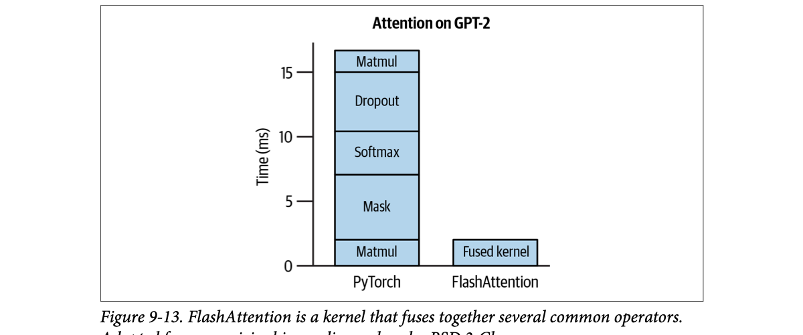
How to read this figure. Attention on GPT-2, time in milliseconds. The left (PyTorch) bar stacks five separate operators: matmul (Q·Kᵀ), mask, softmax, dropout, matmul (× V), totalling roughly 17 ms; mask, softmax and dropout, which do little maths, take most of the time. The right (FlashAttention) bar is one fused kernel at roughly 2 ms. Same result, several times faster, because the in-between results never leave the chip.
The tiling-in-SRAM detail is how FlashAttention achieves the fusion (from the FlashAttention paper, Beyond the book); the chapter itself says only that it fuses operators.
Making masala chai unfused: boil water, pour it into a jug and put it in the fridge; take it out, add tea leaves, pour back into the fridge; take out, add milk… Fused: do everything in one pot on the stove. Same chai, a fraction of the trips. Where it breaks: a pot fits any amount of chai; SRAM is tiny, so FlashAttention must process the matrices in small tiles.
Mask, softmax and dropout do very little maths per byte, so unfused they are bandwidth-bound: the GPU spends its time moving the big score matrix to and from HBM. Fusing them keeps intermediate values in SRAM (10+ TB/s, plate 21) and turns a chain of bandwidth-bound steps into one compute-heavy step.
"What does FlashAttention actually do?" Say: "It computes exact attention, no approximation, but as one fused kernel: it tiles Q, K and V into on-chip SRAM and does matmul, masking, softmax and the second matmul there, so the n×n score matrix never goes to HBM. That removes most memory traffic; in the book's GPT-2 figure attention drops from about 17 ms to about 2 ms."
Kernels are specialized pieces of code optimized for specific accelerators (GPUs, TPUs). They usually implement compute-heavy routines that run over and over, often in parallel, to get the most out of the hardware. Common AI operations, matrix multiplication, attention and convolution, all have specialized kernels for different hardware. (Footnote 23: convolutions are common in image generators like Stable Diffusion.)
Writing kernels needs deep knowledge of the hardware: how the memory hierarchy is laid out (caches, global memory, shared memory, registers) and how data moves between levels. Kernels are written in low-level languages: CUDA (NVIDIA GPUs), Triton (OpenAI's language for custom kernels) and ROCm (AMD GPUs). They give fine control over threads and memory access but are harder to learn than Python.
Because of that barrier, kernel writing used to be a "dark art" practised by a few. Chip makers (NVIDIA, AMD) employ optimization engineers to make their hardware efficient for AI; frameworks (PyTorch, TensorFlow) employ kernel engineers to tune for different accelerators. With rising demand for inference optimization and accelerators everywhere, more AI engineers now write kernels, and there are many good tutorials. Four common techniques:
| Technique | What it does | Why it helps |
|---|---|---|
| Vectorization | In a loop, process several contiguous data elements at once instead of one at a time. | Fewer data I/O operations → lower latency. |
| Parallelization | Split an array into independent chunks processed at the same time on different cores or threads. | Uses all the cores. |
| Loop tiling | Reorder data access in a loop to match the hardware's memory layout and cache. | Better cache reuse. Hardware-dependent: a good CPU tiling may be bad on GPU. |
| Operator fusion | Combine several operators into one pass, e.g. two loops over the same array become one. | Fewer reads/writes of the same data. |
Vectorization, parallelization and tiling apply broadly across models. Operator fusion needs a deeper understanding of a specific model's operators and architecture, so it takes more attention from optimization engineers.
Kernels are tied to a hardware architecture: each new architecture needs new kernels. FlashAttention was built mainly for NVIDIA A100; FlashAttention-3 came later for H100 (Shah et al., 2024).
A model script lists the operations to run. To run it on a GPU it must be translated into something that hardware understands; that's lowering. A tool that lowers code for specific hardware is a compiler; compilers bridge ML models and hardware. While lowering, operations are swapped for specialized kernels wherever possible. (Which compilers exist: end of plate 37, where the book lists them.)
# Unfused: two passes over the data, an intermediate list written and read back
scaled = [x * w for x in acts] # pass 1: read acts, write scaled
out = [max(0.0, s) for s in scaled] # pass 2: read scaled, write out
# Fused: one pass, no intermediate stored
out = [max(0.0, x * w) for x in acts] # read acts once, write out onceSame result, half the memory traffic. On a GPU, "the list" is a tensor in HBM, and each pass is a kernel launch; fusing saves both the trips and the launch overhead. Variable names are made up.
A kernel is a tailor-made suit for one body (one chip); a compiler is the master tailor who takes a generic pattern (your PyTorch model) and cuts it to measure, swapping in his best ready-made pieces (specialized kernels) wherever they fit. Where it breaks: when a new body shape arrives (new GPU generation), the old suits don't fit; FlashAttention-3 had to be made for H100.
Frameworks run operators one by one as generic kernels, each paying a launch cost and a round-trip to HBM. A compiler sees the whole graph, so it can fuse neighbours, pick tile sizes for the target cache, and use vector instructions, turning many bandwidth-bound steps into fewer, denser ones.
"What's the difference between a kernel and a compiler in ML?" Say: "A kernel is hand-optimized code for one operation on one hardware architecture, written in CUDA, Triton or ROCm using tricks like vectorization, parallelization, loop tiling and operator fusion. A compiler lowers the whole model graph to hardware code and substitutes specialized kernels where it can, as torch.compile, XLA or TensorRT do."
The PyTorch team (2023) stacked four optimizations on Llama-7B:
torch.compile to compile the model into more efficient kernels.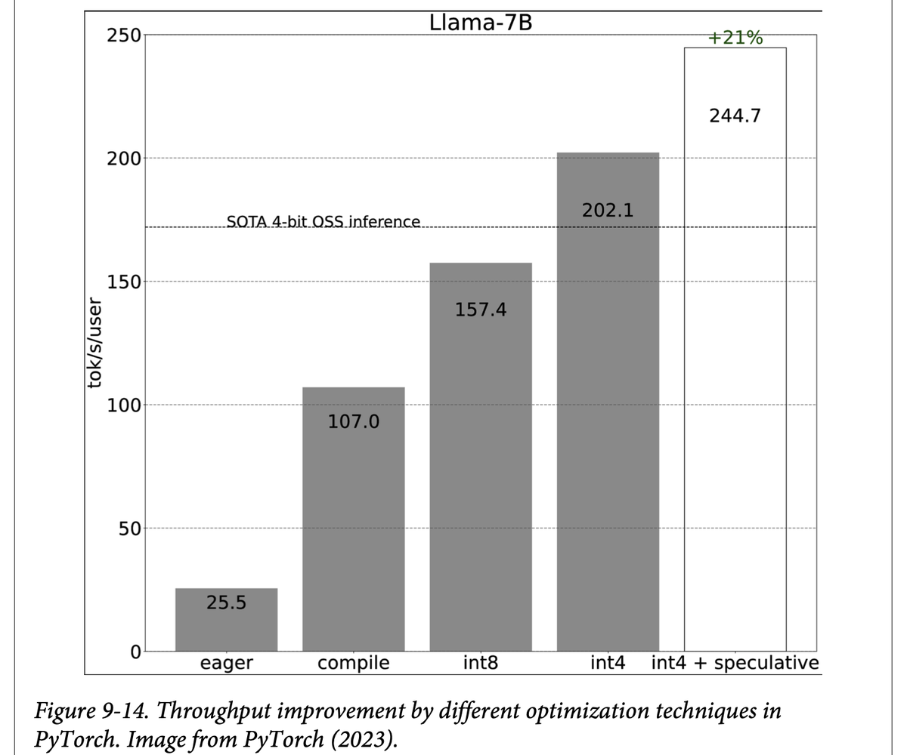
How to read this figure. Y axis: tokens per second per user. Each bar adds one step to the previous: eager (plain PyTorch) 25.5 → compile 107.0 (≈4.2×) → int8 157.4 → int4 202.1 → int4 + speculative 244.7 (the outlined bar, +21% over int4). The dashed line marks the then state-of-the-art for open-source 4-bit inference (about 172); the int4 steps pass it. Overall ≈ 9.6× faster than eager.
The experiment ran on an A100 GPU with 80 GB. Huyen notes it was unclear how these steps affected output quality (quantization can; compile and speculative decoding shouldn't).
Compilers you'll meet (book, pdf p464). Standalone: Apache TVM and MLIR (Multi-Level Intermediate Representation). Built into frameworks: torch.compile (PyTorch), XLA (Accelerated Linear Algebra, originally from TensorFlow, open-source version OpenXLA), and the compiler inside TensorRT, optimized for NVIDIA GPUs. AI companies may also have their own compilers with proprietary kernels for their workloads. (Footnote 24: many companies treat kernels as trade secrets; running models faster and cheaper than competitors is a competitive advantage.)
import torch
model = load_my_llama() # your own loader (made-up name)
fast_model = torch.compile(model) # lower to fused, hardware-specific kernels
out = fast_model.generate(prompt_ids) # first call compiles (slow); later calls are fasttorch.compile is the real PyTorch API from step 1; the loader and generate call stand in for whatever your stack uses. The first call pays compile time, so warm it up before measuring latency.
Upgrading a Maruti for a rally: a tuned engine map (compile) gives the biggest single jump; a lighter body (int8, then int4) adds more; a navigator calling the next few turns in advance (speculative decoding) adds the last 21%. Where it breaks: lighter bodies can compromise safety; lower precision can compromise quality, and this case study didn't measure that.
Eager PyTorch launches many small kernels per token with Python overhead in between; for a 7B model at batch 1 that overhead dominates, which is why compile alone gives ≈4×. After that, decode is bandwidth-bound, so halving bytes (INT8, then INT4) gives the next gains, and speculative decoding finally uses the idle FLOPs.
"You have one A100 and a 7B model that's too slow. What do you do, in order?" Say: "Compile first (torch.compile or a serving engine with fused kernels), since that removed most overhead in PyTorch's Llama-7B study, 25.5 to 107 tok/s. Then weight-only quantization to INT8 or INT4, checking quality on my eval set. Then speculative decoding for another ~20%. Measure TTFT, TPOT and quality after each step."
Service-level optimization is mostly resource management: given fixed compute and memory and a changing workload (user requests, maybe for different models), allocate resources to optimize latency and cost. Unlike many model-level techniques, service-level ones don't modify the model and shouldn't change output quality.
Batching is one of the easiest ways to cut cost. Your service often gets several requests at about the same time; instead of processing each separately, group the ones that arrive close together. That raises throughput (more requests per second per GPU) and so lowers cost per request. (The book's sentence here says batching can "significantly reduce" throughput; from the surrounding text and the analogy it clearly means the opposite: batching increases throughput.)
Huyen's analogy: processing each request alone is everyone driving their own car; batching is putting them on a bus. A bus moves more people but can make each journey longer. Done intelligently, the latency cost can be minimal. Three main techniques:
| Technique | Rule | Bus version | Downside |
|---|---|---|---|
| Static batching | Group a fixed number of inputs; run when the batch is full. | Bus leaves only when every seat is filled. | The first request waits for the last one to arrive, however late it is. |
| Dynamic batching | Set a maximum time window. With batch size 4 and window 100 ms, run when 4 requests are in or 100 ms have passed, whichever is first. | Bus leaves on schedule or when full. | Batches may be partly empty → wasted compute. |
| Continuous batching (also in-flight batching; Orca, Yu et al., 2022) | Return each response as soon as it finishes and slot a new request into its place. | Bus drops a passenger and immediately picks up another. | More complex scheduler; needs per-step (token-level) scheduling. |
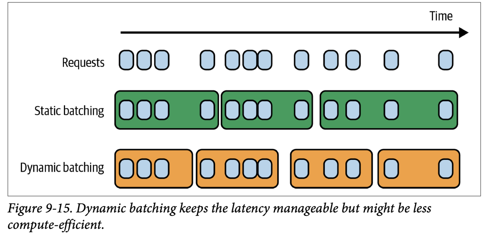
How to read this figure. Top row: requests arriving over time, sometimes in clumps, sometimes alone. Static batching (green) always waits for four: the first batch stretches until the 4th request finally arrives, so early arrivals wait a long time; the last batch spans the long gaps at the end. Dynamic batching (orange) cuts batches by time window: every box is about the same width (bounded wait), but some hold only two requests, so part of the GPU's batch capacity is idle.
A second problem: in naive batching, every request in a batch must finish before any response is returned. LLM responses vary wildly in length: if one request needs 10 output tokens and another 1,000, the short one waits for the long one. That's needless latency for short requests. Continuous batching fixes it by batching operations so one response's generation doesn't hold up another's.
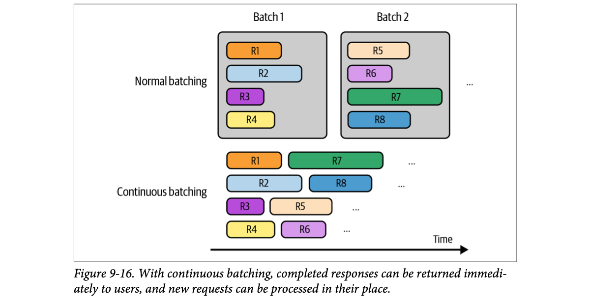
How to read this figure. Bar length = how long each request takes to generate. Normal batching: batch 1 (R1–R4) is a grey box as wide as its longest member, R2; R3 finished early but its slot sits idle, and batch 2 (R5–R8) can't start until the box closes. Continuous batching: four lanes, and the moment a request ends its lane takes the next one: R3 ends → R5 starts; R4 ends → R6; R1 ends → R7; R2 ends → R8. No idle gaps, and each user gets their answer when it is done.
Toy scheduler: 9 requests with made-up arrival times and generation lengths; one batch runs at a time on 4 slots. In static mode the final partial batch is released when the last request arrives (otherwise it would wait forever). Compare average latency across the three buttons.
Shared autos at a Bengaluru metro exit. Static: the driver won't leave until all seats are full. Dynamic: he leaves when full or after 2 minutes. Continuous: a share-auto that drops one passenger at Indiranagar and picks up a new one right there, never driving with an empty seat. Where it breaks: a real auto has one route; continuous batching handles requests going to totally different "destinations" (output lengths) at once.
Decode is bandwidth-bound: one weight read can serve many sequences at once, so a batch of 8 costs barely more time per step than a batch of 1. Batching therefore multiplies throughput. Continuous batching schedules at the level of each decode step (iteration-level), not each request, so a finished sequence frees its slot immediately and a waiting one joins at the next step.
"Static vs dynamic vs continuous batching?" Say: "Static waits for a full batch, which kills latency at low traffic. Dynamic adds a timeout, bounding wait but sometimes running half-empty batches. Continuous, from the Orca paper, schedules per decode step: finished sequences return immediately and new ones take their slot, so the GPU stays full and short answers aren't held hostage by long ones. vLLM, TGI and TensorRT-LLM all do it." For a voice agent, continuous batching is what keeps TTFT low under load.
Throughput vs latency: plate 13. Batch vs online APIs: plate 8. KV memory decides batch size: plate 32, plate 34. Serving in practice: LLM Engineer's Handbook Ch.8.
Prefill is compute-bound; decode is memory bandwidth-bound (plate 7). Running both on the same machine makes them compete for resources inefficiently and can slow down both TTFT and TPOT.
Picture a GPU already near peak compute with prefill and decode work. It might still squeeze in another light job like a decode. But a new query brings a prefill job along with its decode. That one prefill can drain compute from the existing decodes, raising TPOT for every request already in flight.
So a common optimization is to disaggregate prefill and decode. "DistServe" (Zhong et al., 2024) and "Inference Without Interference" (Hu et al., 2024) show that, for many popular LLMs and apps, running prefill and decode on different instances (e.g. different GPUs) significantly increases the number of requests handled while meeting latency requirements. Decoupling means transferring intermediate state (the KV cache) from prefill to decode instances, but the papers show that overhead is small on modern clusters with high-bandwidth links like NVLink within a node.
The prefill : decode instance ratio depends on workload (longer inputs need more prefill compute) and latency goals (lower TTFT or lower TPOT):
Footnote 25. Talks that mention the prefill-to-decode ratio include "Llama Inference at Meta" (Meta, 2024).
A restaurant where the same cook both takes big catering orders (prefill: chopping for 50) and plates à la carte dishes (decode). Every catering order makes the à la carte diners wait. Better: a prep kitchen and a line kitchen, with a runner carrying prepped trays (KV cache) between them. Where it breaks: the runner's trip costs time; with a slow corridor (slow network) the split can hurt more than help.
Prefill saturates compute units; decode saturates memory bandwidth. Co-located, a big prefill pauses or slows all decode steps in the batch, creating TPOT spikes. Separate pools let each be sized and batched for its own bottleneck, and you tune the pool ratio to your input lengths and SLOs.
"What is prefill/decode disaggregation?" Say: "Running prompt processing and token generation on different GPU pools. Prefill is compute-bound and decode is bandwidth-bound, so mixing them lets new prompts stall existing streams. Splitting them, then transferring the KV cache over NVLink, improves goodput under latency SLOs; DistServe shows this. Ratio depends on input length: 2:1 to 4:1 for long prompts and TTFT focus, 1:2 to 1:1 for short prompts and TPOT focus."
Many prompts in an app share text. A prompt cache stores the overlapping segments so they're processed only once. The commonest shared segment is the system prompt: without a cache the model reprocesses it on every query; with one, only the first query pays.
It also helps when:
Also called a context cache or prefix cache.
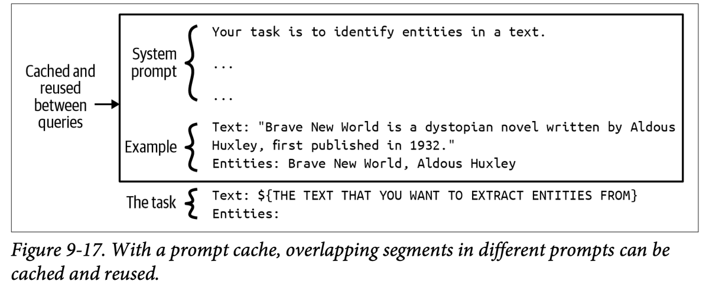
How to read this figure. An entity-extraction prompt. Inside the box: the system prompt (the instructions) and an example (a sample sentence about Brave New World and its extracted entities). These are identical for every query, so the arrow says they are cached and reused. Outside the box: the task, a template line where each query's own text is inserted. Only this last part needs fresh processing per query. Note the shared part is the prefix: put stable text first, variable text last.
For apps with long system prompts, the savings are big. With a 1,000-token system prompt and one million API calls a day, caching saves processing about one billion repeated input tokens daily. It isn't free: like the KV cache, a prompt cache can be large and use memory, and unless your model API offers it, building one can take significant engineering.
Since its introduction in November 2023 by Gim et al., prompt caching has spread quickly into model APIs. As of the book's writing: Google Gemini gives cached input tokens a 75% discount but charges for cache storage ($1.00 per million tokens per hour). Anthropic promises up to 90% cost savings (longer cached context, bigger savings) and up to 75% latency reduction.
| Use case | TTFT without caching | TTFT with caching | Cost reduction |
|---|---|---|---|
| Chat with a book (100,000-token cached prompt) | 11.5 s | 2.4 s (−79%) | −90% |
| Many-shot prompting (10,000-token prompt) | 1.6 s | 1.1 s (−31%) | −86% |
| Multi-turn conversation (10-turn convo with a long system prompt) | ~10 s | ~2.5 s (−75%) | −53% |
Footnote 26. llama.cpp also has prompt caching, but as of writing it seems to cache only whole prompts and to work for queries in the same chat session. Documentation is thin; Huyen's reading of the code is that in a long conversation it caches the previous messages and processes only the newest one.
Defaults reproduce the book's example: 1,000-token prefix × 1 million calls ≈ 1 billion repeated tokens a day. The calculator ignores storage fees (Gemini's $1.00/M tokens/hour) and write surcharges some APIs add (Beyond the book).
STATIC_PREFIX = SYSTEM_RULES + FEW_SHOT_EXAMPLES # identical bytes on every call
def build_prompt(user_text):
return STATIC_PREFIX + "\nText: " + user_text + "\nEntities:" # variable part LASTPrefix caches match from the start of the prompt, so anything that changes per call (timestamps, user names, retrieved chunks) must come after the stable part, or nothing gets reused. How you switch caching on differs by API (a flag, a cache object, or automatic); check your provider's docs rather than assuming.
A tiffin service that cooks the dal and rice for all 200 customers in one big batch every morning (shared prefix) and only makes each customer's special sabzi to order (unique suffix). Where it breaks: the big pots take kitchen space (cache memory/storage cost), and if every customer wanted a different dal, there'd be nothing to share.
Prefill of a prefix produces its KV cache. Because a causal model's K/V for a token depend only on earlier tokens, an identical prefix always yields identical K/V. Store them keyed by the prefix, and later requests skip that prefill entirely: lower TTFT and less compute. It's the KV cache (plate 31) reused across requests instead of within one.
"How would you cut cost for an agent with a 5K-token system prompt?" Say: "Prompt (prefix) caching: keep the system prompt and tool definitions byte-identical at the start of every request and put the per-turn content last, so the provider reuses the cached KV for the prefix. Anthropic cites up to 90% cost and 75% latency savings, and in multi-turn chats earlier turns can be cached too. Watch storage fees and cache lifetimes." Directly relevant to tool-calling voice agents with long instructions.
Accelerators are built for parallel processing, and parallelism strategies are the backbone of high-performance computing. New ones keep appearing; the book covers a few for reference. Two families work for all models: data parallelism and model parallelism. A family specific to LLMs: context and sequence parallelism. One optimization may combine several.
Replica parallelism is the simplest: create multiple replicas of the model. More replicas → more requests handled at once, at the cost of more chips. (Footnote 27: in training, the same technique is called data parallelism.)
Fitting models of different sizes onto different chips is a bin-packing problem, which gets messy with more models, replicas and chips. Example: models of 8B, 13B, 34B and 70B parameters, GPUs with 24, 40, 48 and 80 GB, all models at 8 bits (so roughly 1 GB per billion parameters):
Weights only; real deployments also need room for the KV cache and activations, so the actual fit is tighter (plate 32).
Packing luggage for a family trip into cars of different sizes: three medium suitcases might fill the Swift, or the Swift could take the one giant trunk. Replica parallelism is adding more cars to carry more passengers. Where it breaks: suitcases can't be split, but a model too big for any car can be (model parallelism, next plate).
Each replica serves requests independently, so throughput scales almost linearly with replicas and latency per request can improve (each machine handles fewer requests). No communication between replicas is needed, which is why it's easy. The hard part is placement: a 2-D bin-packing of memory and traffic across mixed hardware.
"Traffic doubled; what's the simplest way to scale an LLM endpoint?" Say: "Replica parallelism: run more copies behind a load balancer. It needs no model changes and no inter-GPU communication, so it scales throughput nearly linearly. The real puzzle is packing different model sizes onto different GPUs; for example a 40 GB card can host three 8-bit 13B replicas or one 34B. It's called data parallelism in training."
Often a model is too big for one machine. Model parallelism splits the same model across multiple machines, which makes the fitting puzzle even harder. There are several ways to split.
The most common split for inference. Inference is a sequence of operators on multi-dimensional tensors (e.g. matrix multiplication). Tensor parallelism partitions the tensors of one operator across devices, breaking it into smaller pieces that run in parallel. Example: when multiplying two matrices, split one of them column-wise.
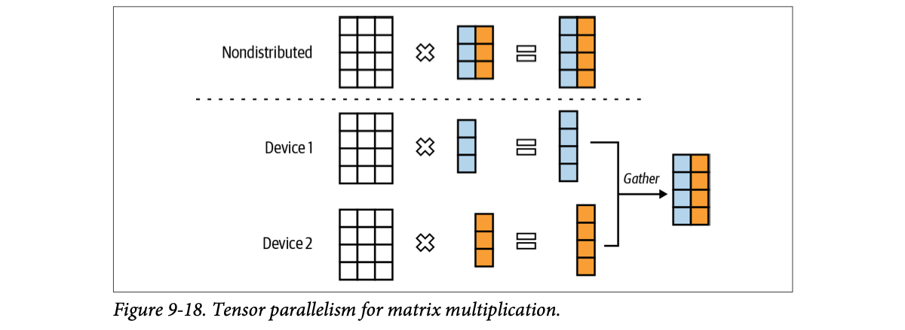
How to read this figure. Top: a normal multiply on one device: a 4×3 matrix × a 3×2 matrix (blue column, orange column) = a 4×2 result. Bottom: the right-hand matrix is cut by columns. Device 1 computes the left matrix × the blue column → the blue result column; Device 2 does the orange column at the same time. A gather step glues the two columns together into the same 4×2 answer. Each device holds only half of the split weight matrix and does half the work.
Two benefits: it lets you serve models that don't fit on one machine, and it reduces latency (each device does less work). The latency gain can be eaten partly by communication overhead (the gather steps).
Divide the model's computation into stages (e.g. groups of layers) and put each stage on a different device. As data flows through, each stage works on one part while others work on later parts, so computations overlap. A batch can be split into micro-batches: once a micro-batch finishes on one machine, its output moves to the next stage on the next machine.
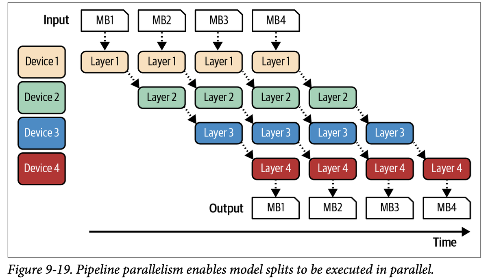
How to read this figure. Four devices, each holding one layer group (colours). Time runs left to right. MB1 goes through Layer 1 on device 1, then Layer 2 on device 2, and so on, a staircase down the diagonal. While MB1 is on device 2, MB2 is already on device 1. In the middle of the timeline all four devices are busy on different micro-batches. Note the empty corners: at the start devices 2–4 wait, and at the end devices 1–3 sit idle (the pipeline "bubble"). Outputs come out in order at the bottom.
Pipeline parallelism lets big models run on many machines but increases total latency per request, because of extra communication between stages. So for strict-latency applications it's usually avoided in favour of replica parallelism. It is common in training, where it helps throughput.
Tensor parallelism: four people each checking a quarter of the same exam paper at the same time, then stapling their marks together. Pipeline parallelism: an assembly line making parathas: one rolls, one stuffs, one cooks, one packs; many parathas are in progress at once, but each one still passes through all four stations. Where it breaks: exam checkers need to talk to merge marks (communication), and the paratha line wastes time at the start of the shift while stations wait for their first piece (bubble).
Tensor parallelism cuts the work inside each layer, so every token's path is shorter but needs a fast all-gather or all-reduce after each split operator, which is why it's used across GPUs joined by NVLink within a node. Pipeline parallelism cuts between layers: each hand-off is a small activation transfer, but a single request still visits every stage in sequence, so its latency doesn't drop.
"Tensor vs pipeline parallelism for serving a 70B model?" Say: "Tensor parallelism splits each matrix multiply across GPUs, so it both fits the model and lowers latency, at the cost of communication after each layer; it's the default for inference inside a node. Pipeline parallelism splits layers into stages; it fits big models and helps throughput, but adds latency per request, so it's used more in training or across nodes. For tight latency I'd use tensor parallelism inside a node and replicas for scale."
Two less common techniques, mentioned to show how varied parallelism can be. Both were developed to make long input sequences more efficient to process:
Beyond the book: other sources (e.g. Megatron-LM papers) use "sequence parallelism" for splitting activations along the sequence dimension for some layers; the definition above is the book's.
Translating a 400-page novel. Context parallelism: two translators each take 200 pages. Sequence parallelism: one translator does the rough translation of the whole book, the other does all the editing. Where it breaks: page 250 may refer back to page 30; in attention, tokens on machine 2 need keys and values from machine 1, so they still have to talk.
With very long inputs, even one sequence's activations and KV cache can exceed a GPU. Splitting along the sequence spreads that memory and prefill compute; attention then needs to exchange K/V between devices so every token can still see the earlier ones.
"Name the parallelism strategies for LLM serving." Say: "Replica: copies of the whole model for more throughput. Tensor: split each operator across GPUs to fit big models and cut latency. Pipeline: split layers into stages, good for throughput, adds latency. For very long inputs, context parallelism splits the sequence across devices and sequence parallelism splits the operators. Real systems mix them."
A model is only as useful as its inference cost and latency allow. Cheaper inference makes AI-driven decisions affordable; faster inference lets AI fit into more products. Because the payoff is so large, many talented people keep inventing new optimizations.
Measure first. The chapter starts with efficiency metrics: latency, split for language models into TTFT (driven by prefill) and TPOT (driven by decode); throughput, which maps directly to cost; and utilization (MFU, MBU). Latency and throughput trade off: accept more latency and you can cut cost; cutting latency usually costs more.
Hardware matters. How efficiently a model runs depends on the chip, so the chapter tours AI accelerators: compute primitives, FLOP/s by precision, the memory hierarchy, power.
Most developers will use model APIs with optimization built in, but knowing the techniques helps you judge an API's efficiency (and its quality trade-offs).
Two levels of techniques. Model-level techniques usually change the model and may change its behaviour; service-level techniques keep the model intact and change only how it's served.
Choose by workload and requirements. KV caching matters far more for long contexts than short ones. Prompt caching is crucial for long, overlapping prompt segments or multi-turn chats. If low latency beats cost, scale up replica parallelism: more machines, each handling fewer requests, so each request gets more resources.
The usual heavy hitters across use cases: quantization (works well across models), tensor parallelism (cuts latency and fits bigger models), replica parallelism (easy to implement), and attention optimization (big speed-ups for transformers).
Inference optimization is the last of the book's model-adaptation techniques; Chapter 10 puts them together into one system.
| Term | Plain meaning |
|---|---|
| Inference server / service | Server runs models on hardware; service also handles receiving, routing and preprocessing requests (plate 3) |
| Compute-bound / memory bandwidth-bound | Limited by maths speed / by how fast data moves from memory to compute (4–5) |
| Arithmetic intensity, roofline | FLOPs per byte moved; chart that shows which bound an operation hits (6) |
| Prefill / decode | Process all input tokens in parallel (compute-bound) / generate output one token at a time (bandwidth-bound) (7) |
| TTFT, TPOT | Time to first token; time per output token (11) |
| Throughput, goodput | Work done per second; requests per second that meet the SLO (13–14) |
| MFU, MBU | Share of peak FLOP/s, share of peak memory bandwidth actually used (15–16) |
| HBM, SRAM, DRAM | GPU's main fast memory; tiny on-chip memory; CPU system memory (21) |
| TDP | Thermal design power: heat to remove under typical load; max draw ≈ 1.1–1.5× (22) |
| Quantization, distillation, pruning | Lower precision; train a small mimic; remove or zero unhelpful parameters (26) |
| Speculative decoding | Draft model proposes K tokens, target verifies in one parallel pass (28) |
| Inference with reference | Use spans copied from the input as draft tokens (29) |
| Parallel / Jacobi decoding, Medusa | Generate several future tokens at once and verify them; Medusa uses extra heads and tree attention (30) |
| KV cache | Stored keys and values of past tokens, reused each decode step; inference only (31) |
| Local windowed, cross-layer, MQA, GQA | Attention redesigns that shrink KV cache (33) |
| PagedAttention | vLLM's block-based KV-cache memory manager (34) |
| Kernel, FlashAttention | Hardware-specific optimized code; fused attention kernel (35–36) |
| Vectorization, parallelization, loop tiling, operator fusion | Four common kernel-writing techniques (36) |
| Lowering, compiler | Translating a model to hardware code; the tool that does it (36–37) |
| Static / dynamic / continuous (in-flight) batching | Wait for full batch / full or timeout / swap requests in and out per step (38) |
| Prefill/decode disaggregation | Run prefill and decode on separate instances (39) |
| Prompt (context, prefix) cache | Reuse processing of shared prompt prefixes across requests (40) |
| Replica, tensor, pipeline, context, sequence parallelism | Copies of the model; split operators; split layers into stages; split the input; split operators across machines for long inputs (41–43) |
| Name | What it does with the ideas |
|---|---|
| NVIDIA A100, H100, H200; Google TPUs; AMD; Intel Gaudi | Accelerators whose FLOP/s, HBM and power the chapter compares (H100 Table 9-2; MBU on A100/H100/Gaudi2 in Fig 9-5) |
| CUDA, Triton, ROCm | Languages for writing GPU kernels (NVIDIA, OpenAI, AMD) |
| vLLM | Inference framework known for PagedAttention; supports speculative decoding and continuous batching |
| TensorRT-LLM / TensorRT | NVIDIA's inference stack and compiler; supports speculative decoding |
| llama.cpp | Local inference; speculative decoding; whole-prompt caching within a chat session (footnote 26) |
PyTorch (torch.compile), TensorFlow, XLA / OpenXLA, Apache TVM, MLIR | Frameworks and compilers that lower models into efficient kernels; PyTorch's Llama-7B case study (Fig 9-14) |
| FlashAttention / FlashAttention-3 | Fused attention kernels for A100 and H100 |
| Medusa, Lookahead decoding | Parallel decoding methods; NVIDIA reported up to 1.9× for Llama 3.1 with Medusa on HGX H200 |
| DeepMind (Chinchilla-70B + 4B draft) | Speculative decoding: latency cut by more than half |
| Character.AI | MQA + local/global interleaving + cross-layer attention cut KV cache 20×+ |
| Google Gemini, Anthropic | Model APIs with prompt caching (75% discount + storage fee; up to 90% cost and 75% latency savings) |
| OpenAI, Gemini batch APIs | Cheaper, slower batch inference (plate 8) |
| Fireworks, Together, Groq, Cerebras | Inference providers whose Llama 3.1 quality varied slightly (Fig 9-8) |
| Anyscale | Found one output token ≈ 100 input tokens in latency impact |
| Databricks | MBU measurements across chips (Fig 9-5) |
| Meta | "Llama Inference at Meta" talk on prefill:decode instance ratios |
| DistServe, Orca | Research systems for prefill/decode disaggregation and continuous batching |
"Which serving stack would you pick?" A safe answer: "For open models on our own GPUs, vLLM or TensorRT-LLM: both give continuous batching, paged KV cache, quantization and speculative decoding. For hosted APIs, I'd evaluate quality per provider (Fig 9-8 shows they differ) and use prompt caching and batch APIs to control cost."
Prefill processes all input tokens together, so each weight read is reused many times (high arithmetic intensity). Decode produces one token per pass, so all weights are read for very little maths (intensity ≈ 1), and memory speed is the limit.
(2.1 − 0.3) ÷ 120 = 15 ms per output token. Total latency = TTFT + TPOT × output tokens.
Throughput 10 RPS, goodput 4 RPS. Goodput counts only requests satisfying the latency objective.
Bandwidth: SRAM (often >10 TB/s) > HBM (≈256 GB/s to >1.5 TB/s) > DRAM (25–50 GB/s). Size is the reverse: DRAM (16 GB to 1 TB+) > HBM (≈24–80 GB) > SRAM (≤ 40 MB).
2 × 32 × 2,048 × 40 layers × 5,120 × 2 bytes ≈ 54 GB, about twice the FP16 weights.
Minimum 1 (no draft accepted, target adds its own token); maximum K + 1 = 5 (all accepted plus the target's bonus).
Little or no gain, maybe a loss: verification relies on idle FLOPs during bandwidth-bound decode (footnote 20). With no spare compute, extra verification work competes with real work.
When outputs overlap heavily with inputs: RAG answers, code edits, multi-turn chats. Draft tokens are copied spans from the context, verified like speculative drafts; Yang et al. report about 2× speed-up.
MQA: one K/V set shared by all query heads. GQA: K/V shared within groups of query heads. Cross-layer: K/V shared across adjacent layers (three layers sharing → 3× smaller cache). All must be applied at training/finetuning time.
All tokens of each training sequence are known in advance, so every next-token prediction is computed at once in parallel; nothing is generated step by step, so there's nothing to cache.
It fuses matmul, mask, softmax, dropout and matmul into one kernel, keeping intermediate results in on-chip SRAM instead of writing the large score matrix to HBM between each operator. Memory traffic, not maths, was the cost.
The short response is held until the long one finishes. Continuous (in-flight) batching returns each response when done and inserts a new request in its slot (Orca).
About 1 billion repeated input tokens a day of prefill. Catch: cache memory/storage (e.g. Gemini charges $1.00 per M tokens per hour), engineering effort if your API lacks it, and the shared text must be an identical prefix.
Tensor parallelism: it fits the model and lowers per-request latency (with some communication cost). Pipeline adds per-request latency, so it's usually avoided here. Scale traffic with replica parallelism.
Full titles for some entries are filled in from general knowledge of the papers (Beyond the book); the chapter cites them by author and year.